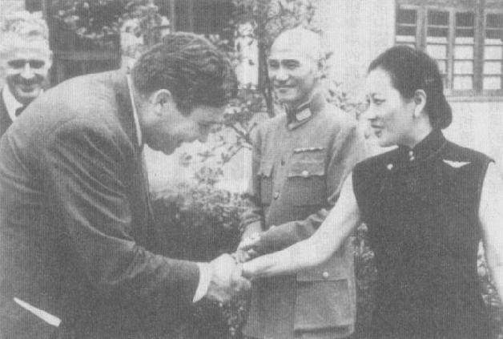
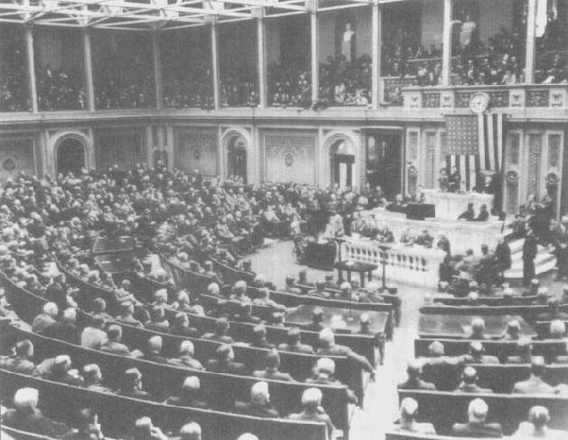

|
前一页 后一页 回目录 回主页 |
第五章：蒋介石和他的美国盟友 1941年底，原本在珍珠港事件之前就根据租借法案承诺供给的武器、补给和器材设备（给飞虎队的100架P-40飞机不计），总价1.45亿美元只运交了2600万。其中多数堆在仰光码头，等候火车北送到腊戍及滇缅公路的起点①。即使缅甸到云南的715英里，一路上窃盗猖獗，在珍珠港事件爆发时，每个月仍有2万吨物资送达目的地②。 ① 据报导，每一卡车处罚时所载的货，由于管理及维修失当加上非法盗窃，等送到目的地往往只剩下1/3。见Zhang Baijia（章百家），"China's Experience in Seeking Foreign Military Aid and Cooperation for Resisting Japanese Aggression," paper presented at Harvard University Conference on Wartime China, Maui, January 2004, p.46; Charles F.Romanus and Riley Sunderland, Stilwell's Mission to China (1952; Washington, D.C.: U.S. Army Center of Military History, 2002), p.45. ② Romanus and Sunderland, Stilwell's Mission, p.45. 蒋介石认为日军可能会封锁滇缅公路，因此他的注意力越来越转向印度。一旦失去滇缅公路，除了通过陷入战火的俄罗斯，再南下外蒙古和新疆此一不确定的路径之外，中国与外界联通唯一的出路，就是从印度飞越喜马拉雅山这条空中航道①。或者，也可设法从印度东北部开辟一条穿越缅北山区的公路。可是，甘地领导的国民大会党，虽然反对日本侵略，却不肯支持英国的作战，有些激进的印度民族主义者甚至乐见印度被日本“解放”。蒋希望亲自出马，劝说甘地和另一位国大党领导人尼赫鲁（Jawaharlal Nehru）在反法西斯的共同目标上合作，或至少不破坏英国对日的作战。因此，在太平洋战争关键的开打阶段，这位中国战区最高统帅飞往印度。盟国阵营里没人把它看做重要大事，也不认为反帝国主义的旗号可让此举变得可行。 ① 1942年2月4日，秦孝仪，《大事长编》卷五，p.1857。 2月4日，蒋在宋美龄的陪同下，先到了腊戍，与缅甸英军司令官胡敦（Thomas Jacomb Hutton）将军在此进行午夜会谈。经过宋美龄的翻译，委员长重申他愿意把刚抵达缅北的中国部队，交给英国指挥。不过在听到胡敦表示缅甸英军已在“灾祸边缘”后，他立刻改变主意。试图撤退到锡唐河（Sittang River）的的第17印度师团已被截断，兵员折损一半；现在日本人要去仰光根本是畅通无阻。委员长此时对英国人守住缅甸的能力失去信心。他决定不要让他最精锐的地面部队卷入“不必要的消耗战”①。 ① Alan K.Lathrop, "The Employment of Chinese Nationalist Troops in the First Burma Campaign," Journal of Southeast Asia Studies 12, no.2 (September 8, 1981): 409-410. 蒋在2月8日抵达新德里。食古不化的帝国主义者邱吉尔，对于这个中国领导人竟然在“英王的印度”做官方访问时，提议会晤“近乎造反者”的甘地，大为生气。英国驻华大使卡尔（Archibald Clark-Kerr）向邱吉尔报告，蒋真心相信他个人对两位印度国大党领导人的影响，对盟国的目标有帮助，并表示他（卡尔）“对蒋的用心和判断力都信心十足”。但是，邱吉尔坚决不让蒋到瓦达镇的甘地住所拜访，而甘地本人也不肯到殖民政府所在的首都新德里。最后，蒋介石和甘地于2月18日，在加尔各答市郊一处灵修中心碰面。两人都是领导反帝国主义的革命领袖，有许多共通点——在宋美龄的翻译下，两人足足谈了五个小时①。 ① 秦孝仪，《大事长编》卷五，p.1857。 蒋告诉甘地，印度继续支持盟国是非常紧要的。这位身形枯槁的领袖表示他同情中国，所以不会妨碍对日本的抵抗。几个月之后，甘地给蒋一封亲笔信说：“我认为我们俩在加尔各答那5小时坦率、真诚的讨论，是我这生最满意、最难忘的经验。”甘地表示，针对英国的非暴力反抗将会继续，但是他“保证（他的）一切行动都将经过审慎盘算，避免有利于日本对中国之侵略”①。蒋对盟国大业做出一份重要的外交贡献——虽然邱吉尔一点也不领情。 ① 甘地给蒋的信，在蒋1942年6月22日给宋子文的电报可见文摘，T.V.Sonng Papers, box 36, folder 5; Chiang Diaries, Hoover, February 18, 1942, box 42, folder 7. 蒋回到重庆，又拍发电文给罗斯福，谈到英国和荷兰应该仿效美国对菲律宾的榜样，清楚地允诺所有殖民地的完全独立。蒋认为，这是确保殖民地人民真正效忠盟国大业唯一的方法。他在这封电文里，大量引述他和“一位印度朋友（甘地）”的谈话①。罗斯福把信息转给邱吉尔，邱吉尔不太高兴。 ① Chiang telegram to Soong, March 15, 1942, T.V.Soong Papers, box 36, folder 5. 2月27日，蒋氏夫妇在儿子经国的陪同下，飞回缅甸的腊戍，再次会见胡敦将军。蒋觉得这位英国将领一副缅甸已失守的样子，而且似乎已准备撤退到印度。不到一个星期，仰光沦陷，这进一步摧毁了蒋委员长对于把国军投入缅甸保卫战一举，仅存的信心。次日，从加尔各答前往重庆的史迪威，在腊戍短暂停留，受到蒋“客气的欢迎”。当着他的面，蒋以他一贯的“尖嗓子”向国军第5军、第6军高阶将领宣布，今后他们只接受史迪威将军的命令。史迪威很高兴地继续飞往中国①。 ① Joseph W.Stilwell, The Stilwell Papers, ed. Theodore H.White（白修德）(London: Mac-Donald, 1949), pp.69, 70. 蒋氏夫妇回到重庆之后，立刻和这位中国战区参谋长进行第一次正式讨论。一见面，蒋先请史迪威叙述他的在华职责，但是他注意到史迪威没提到参谋长这个职位。蒋问：“你是不是我的参谋长？”史迪威答说：“是的，我是阁下的参谋长，直接受您的指挥。”谈到当前的缅甸问题，蒋说他受够了英国的无心作战，很怀疑他们的动机。但是在缅甸境内及边境的国军部队，正在等候史迪威的指挥。史迪威感到有些惊讶，因为蒋竟然真的把中国精锐部队的指挥权交给他①。 ① 蒋1942年3月5日和史迪威会谈的中文摘要，秦孝仪，《大事长编》卷五，p.1872。 史迪威与蒋介石、宋美龄的貌合神离，蒋介石成了酸醋乔口中的“花生米” ① 秦孝仪，《大事长编》卷五，p.1872。 这是他们密切关系的好的开始。宋美龄“兴致高昂、喋喋不休”。她挽着史迪威和陈纳德，走到庭园散步、谈话。她说，她很高兴中国终于“有两位美国军事领袖相助”。史迪威觉得宋美龄在盘算些什么，但是他喜欢她，认为她“直接、有力、精力充沛、爱好权力、喜欢出风头和被奉承……随时可以施展魅力……是个（潜在的）重要盟友，往往能影响她丈夫走上正确的路线上”。蒋就寝前，拍电报给宋子文，要他尽速谒见罗斯福，要求他促成史迪威接掌缅甸全境英军和国军部队①。 ① Stillwell, Papers, pp.94-95. 史迪威第二天去见蒋时，委员长情绪依然十分高昂。他花了很长时间，从容地向新任参谋长讲述了解中国士卒脾气和缺陷的重要性。1942年时，一个标准的中国师，兵员约在7000至9000人之间，但步枪火力最多罕有超过3000枝，加上几百挺轻机关枪，30、40挺中型机关枪，以及少许3英寸的臼炮。除了少数小口径的反坦克炮之外，一般的师团并没有配炮兵队。每个师的讯号兵都少得可怜，仅有1、2辆汽车，或许半打卡车，以及几百匹营养不良的骡马。器材、武器、弹药来源各不相同，零件无法共用。一般而言，营养不良的兵员有一半，而且一名医生平均要照顾数千人；许多人因病亡故①。 ① Field Marshall Viscount Slim, Defeat into Victory: Battling Japan in Burma and India, 1942-1945 (New York: Cooper Square Press, 2000), p.17; Zhang Ruide（张瑞德），"The Central Army from Whampoa to 1949," in A Military History of China, ed. David Graff（葛德威）and Robin Hiphem (Boulder, Colo.: Westview, 2002), pp.201-210. 接下来，蒋把话题转到当前重要的作战问题——缅甸。蒋对前一天夜里的讨论已经动摇了。他回到最初的观点，觉得仰光已经失守，此时若要设法收复，风险很大，因为日本在海上、空中，甚至可能连地面都掌优势兵力。这次谈话的完整誊本被送交给在华府的宋子文。底下是蒋对史就此一议题谈话的摘要版，史迪威礼貌地听着： 日军掌握了空中和海上优势，也拥有坦克和大炮，使得光复仰光很困难。第5军、第6军是国军的精锐部队。他们的伤亡会有很严重的后果。因此，这些部队不能被打垮，是十分重要的……在缅甸的上上之策就是在瓦城坚守东西防线。国军应部署在瓦城郊外，等候日军进攻当地英国部队。然后，国军或许可猛扑敌军。以目前缅甸的态势看来，发动攻势应该不是指导方针。① ① 给宋子文之电报，有提到蒋介石、史迪威3月10日谈话译本，T.V.Soong Papers, box 61, folder 11. 史迪威尊敬地听完后，向蒋报告：“我非常感谢您如此坦诚的一席话。您可以放心，我会非常重视您所告诉我的话，您大可放心。我明白我需要认识、了解中国人的心理。您很大方地把缅甸国军部队交给我指挥……我会尽全力执行您的命令。”然而，会谈结束后，史迪威在日记写下，他的计划不变：“全力光复仰光；光复不成，才退守瓦城。”① ① Romanus and Sunderland, Stilwell's Mission, p.97. 史迪威要在仰光北方150英里的同古抗击日军，然后全面反攻夺回仰光。当他和蒋讨论战术、战略和部队相互关系时，深刻的差异明显地分隔着两人。打从早年驻华就不喜欢蒋的史迪威，开始在日记、在其他美国人面前称呼蒋作“花生米”。蒋也不高兴这个老美趾高气昂的态度，以及越来越卤莽的过分自信。史迪威才刚到任两个星期，就已大力挑战了委员长的判断，对如何部署中国最精锐的两个军团，坚持己见。 同时，罗斯福也不太愿意就缅甸英军指挥权议题去劝说邱吉尔，毕竟缅甸是英国的殖民地。英军亚历山大元帅（Harold Alexander）访问重庆之后，蒋也同意由亚历山大全盘指挥缅境作战。蒋夫人递信给史迪威告诉他这个决定。如此传递攸关国家大事的机密资讯，实在不寻常，但也反映出她非常希望与史迪威建立特殊关系①。 ① Frank Dorn, Walkout with Stilwell (New York: Thomas Y. Crowell, 1971) pp.71-72. 魏菲尔已经向亚历山大报告过，他非常怀疑他如何能够守住缅甸。蒋也担心日军远比史迪威想像中强大。他认为，日军在缅甸南部及邻接的泰国，兵力已经增加一倍。日军在仰光地区有将近500架军机，而飞虎队只剩下42架堪用的飞机。再者，日本海军现已掌控了整个孟加拉湾①。鉴于日军明显享有海、空优势，英军又仓皇撤退，此时此刻守势战略似乎很合理。不过史迪威仍坚持采取攻势。 ① Romanus and Sunderland, Stilwell's Mission, p.100. 日子一天天过去，蒋越来越担心史迪威的欠缺经验及脾气，以致夜不成眠。他冒风险把精锐部队交付给一个很快就不能信赖的人，而且此人从未实际带兵作战，也没规划或执行过真正的多个师级部队的作战①。蒋觉得史迪威似乎浑然不知有被敌军围困的危险。宋美龄不隐藏她对采取攻势的偏爱，私下告诉史迪威“坚持下去”，反正一旦开战，蒋不愿意也不行，所以他完全可以放手去做②。史迪威觉得他必须赌这一把，好向罗斯福展示他认真要在战争中扮演重要、合作的角色。 ① Chiang Diaries, Hoover, March 20, 1942, boxe 42, folder 8. ② Stillwell, Papers, p.82. 3月19日，日军在同古攻击国军第200师，这是国军唯一一个可以完全靠卡车移动的部队。双方鏖战12天，所有的报导转述都称这支中国部队英勇奋战。史迪威3月22日抵达前线，接下直接指挥权①。3月30日，火力、兵员都明显不如人的第200师，毫发无伤地退出几乎已被包围的城市，同时右翼的英、印部队则退往伊洛瓦底江流域。第5军军长杜聿明一度用尽各种藉口，不回应史迪威要他以5个团的兵力进攻日军的命令。后来杜聿明提出报告解释有一次他不肯进攻某城镇，是因为镇上有平民。 ① 同上注。 委员长不改旧习，在交战中不时直接下达命令或“建议”给师长。史迪威将初步的挫败归罪于蒋的“干预”，飞回重庆。次日，他冲进蒋的办公室，直接开门见山，控诉中国将领不服从他的命令①。他说，他对这些军官没有信心，不干了。蒋表现得十分震惊，答应改正这个情况。史迪威在日记里记下，这些中国军官对他不尊重、不服从，都是源自“最高阶层”。他也承认，“公道地说，要他们把重要地区的几团兵力交付给一个他们既不认识、也没太多信心的天杀的老外，着实不容易。”②他此后再没有记下如此深入的观察。 ① Romanus and Sunderland, Stilwell's Mission, pp.106-109. ② Stillwell, Papers, p.93. 同时，蒋也很惊讶截至目前为止，史迪威都没上呈任何有关缅甸军事行动的报告，而且“只因为有个师长不肯听命攻打缅甸的一个城镇”，就丢下指挥责任回到重庆。蒋写下，国军在缅甸再怎么牺牲，也不可能有助战局，但既然中国是盟国一员，“唯有照预定方针进行，以待时局之转移而已。”① ① Chiang Diaries, Hoover, April 1, 1942, box 42, folder 9. 蒋和太太商量如何处理史迪威。宋美龄依然认为史是个能干的军事领袖。在她看来，他的直接和粗俗正是典型的老美脾气，还满得她喜欢的。打一开始她就知道她丈夫和这位老美性格差异极大。但是，维持委员长和罗斯福关系良好，是她的第一优先。她认为不论史迪威是怎么样的个性，都必须设法容忍让关系维持下去。他是罗斯福派到中国的人，而且中美关系对每件事都很重要。她告诉她丈夫，“与大局相比”，史迪威的问题“就小得多了”①。她奉劝“介兄”要怀柔，他接受了这个建议。 ① 2003年7月26日，王冀在华府受访。 次日，史迪威到重庆郊外蒋委员长的黄山寓邸见蒋。蒋告诉史迪威，要派罗卓英中将到缅甸，担任史的执行官。以后史迪威把命令下达给罗，罗会再下达给国军指挥官。此外，委员长又说他会亲自前往缅甸，告诉各级将领，史迪威是他们的上司，并拥有完全的权力。会后，史迪威恢复乐观。他喜欢罗卓英。虽然他认为蒋“精神不稳定”，被马屁精、寄生虫包围，不过仍在在日记写下，委员长“坚决有力，而且有心继续抗战”①。 ① Stilwell, Papers, pp.93,94; 1942年4月2日，秦孝仪，《大事长编》，p.1891。 史迪威4月5日回到前线。跟他同机的有委员长、宋美龄和“时代生活公司”发行人鲁斯。到了腊戍，一行人获悉中、英部队已撤出同古，英军往伊洛瓦底江上游撤退，国军则穿越锡唐河流域后撤。史迪威提议在平蛮（Pyinmana）布下陷阱，把敌军诱入，然后他将在当地发动反攻。如果计划失败，盟军就退守瓦城。蒋“明白地”告诉杜聿明，史迪威是他们的头儿，有权升迁、革除、惩罚任何一位远征军的军官。接着蒋、史、杜、罗等人开始规划史所主张的“决战”。蒋把自己的作战计划交给史迪威——史迪威认为“还不就是那一套”，“但不算太坏”。史迪威也检阅了国军部队，形容他们是“长得不错的一伙士兵”①。 ① Stilwell, Papers, p.97. 第5军已撤退到平蛮附近史迪威指定的某地，日军果如史迪威所料，也往北追击。但是，英国人深怕他们的印度、缅甸部队会被包围，已经撤离国军右翼的阵地。4月12日，由维吉尼亚军校毕业生孙立人率领的、国军最优秀的新38师，奉史迪威之命从瓦城向南移动。蒋获悉国军右翼暴露，急电史迪威：“绝对不允许”在平蛮逗留。史迪威形容他的统帅下达的这道命令“狗屁不通”，继续准备他的反攻作战。但是，4月18日，由陆军元帅史林（William Slim）率领通晓数种语言的缅甸第一师，在仁安羌（Yenangyaung）油田遭到包围，国军防线西侧出现60英里的空隙。史迪威在凌晨3点钟被叫醒，急令部署在国军东侧的第200师以及新38师的一个团，急往驰援。史迪威明白他的反攻计划如今已完全不可能，下令96师往北撤到平蛮①。 ① 同上注，pp.97, 99；蒋1942年4月15日给罗仲英的指示。T.V.Soong Papers, box 61, folder 2. 据史迪威说，蒋建议犒赏每一班士兵一颗西瓜，以示激励。 杜聿明显然是反对驰援英军，故意拖延派出第200师；直到4月21日晚间才赶到仁安羌，此时孙立人的新38师（113团）已经协助缅甸第一师突破包围。但是，前一天，日军以超乎史迪威或英军所预期的强大兵力，从泰国的丛林冲出，以坦克、步兵猛扑东翼——国军负责的防区。第200师奉命立刻行军回到东翼迎战；疲累、满身尘土的士兵又挤回卡车里。可是第200师还未赶回东翼，日军已冲决国军防线，迅速地消灭了第6军暂编的第55师，其成员是一群没经验的招募士兵。第6军残部仓皇退往腊戍①。 ① Lathrop, "Employment of Chinese Nationalist Troops," pp.417-418. 蒋认为史迪威抽调第200师赴仁安羌救英军，致命地削弱了国军的左翼。这位美国将军呈给华府的报告，将失败怪罪于英军和国军第55师作战不力①。拥值得一提的是，这一次他没怪到蒋介石头上。不过蒋介石命令他的将领，此后除非有中国军政部的核可，否则不得听史迪威之令调动部队②。他没有直接向史迪威表露他的不痛快，但是这位中国领导人的挫折感日益上升。东翼兵败后，事隔一个星期，史迪威仍未向他的中国战区最高统帅报告事情经过。可是杜聿明和罗卓英每天都会回报，而且几乎可以肯定地说，他们都认为史迪威要为溃败负责。 ① 同上注，pp.418-419。引用U.S.Senate Committee on the Judiciary, Internal Security Subcommittee, The Amerasia Papers: A Clue to the Catastrophe of China, 2 vols. (Washington, D.C.: U.S.Government Printing Office, 1970), vol.1, p.187. ② Claire Lee Chennault, The Way of Fighter (1949; Tucson, Ariz: James Thorvaardson and Sons, 1991), pp.158-159. 4月25日，史迪威率领杜、罗，和英军司令亚历山大在瓦城南方25英里的皎泽（Kyaukse）会面。他们同意必须全面撤退。谈话中，6架日本轰炸机出现在上空，一颗500磅的炸弹就在这几位英、美、中将领100码外爆炸。有些人急忙找掩护，可是亚历山大镇定地站在花园里，盯着火势抽烟。史迪威不甘示弱，也倚着阳台栏杆，用罗斯福的那种烟嘴点起一根香烟①。 ① Dorn, Walkout with Stilwell, p.93. 日军在4月29日占领腊戍，大范围包围的危机升高。日军司令官下令以闪电迅速的钳形攻势在瓦城地区包围、歼灭盟军，避免他们退入印度阿萨姆省或中国①。史迪威在士威坡镇（Swebo）接到蒋的指示，要他“前往密支那（Myitkynia），不得延误（蒋本人的强调）”②。史迪威告诉他的副将窦恩（Frank Dorn）上校，他“与部队同进退”；虽然陈纳德派了一架飞机来，他却选择搭车前往密支那③。这时，史迪威似乎以为自己仍执掌兵符，并不知道他所下达的一切命令，现在都得经过蒋批准才算数。5月4日，在经过4天艰苦践涉之后，史迪威和他的幕僚判断撤退到密支那的路已被阻绝。据军事史家表示，部分第5军仍在后方，也就是史迪威的南方；孙立人的新38师也在南方不远处，辛苦地打着后卫掩护战④。 ① Lathrop, "Employment of Chinese Nationalist Troops," p.418. ② Stilwell, Papers, p.109. ③ Chennault, Way of a Fighter, p.160. ④ Romanus and Sunderland, Stilwell's Mission, pp.138-139. 华府方面，高阶将领对盟军在缅甸溃败，十分紧张。宋子文传达美国陆军部（U.S.Sept. of Army）的一项要求给蒋，毫无疑问是经过马歇尔的核可，它请蒋评估史迪威的军事领导能力。蒋信守他对太太的承诺，告诉宋子文代为重申他对史迪威“始终信任”①。事实上，他已经对美、英将领完全丧失信心和信任，直接略过史迪威或亚历山大，下达命令。 ① 蒋1942年5月6日给宋之电报，秦孝仪，《大事长编》卷五，p.1915。 这时候，史迪威决定，他和幕僚“不再有发挥的机会”。他的僚属们都同意并认为“老板应该告诉中国人去死吧，然后趁着还有机会赶紧走人”①。史迪威送出简短的报告通知华府和委员长，他即将离开。他说，国军部队已经四散成多个小群队，会设法撤到印度，因此他的“后续指挥已没必要”②。（事实上，大部分在他指挥下的国军各师，此时仍保持团队行动。）史迪威拍发电报给杜聿明，命令他撤往印度。史迪威的僚属找来当地向导、挑伕和一队骡子，5月5日，一行约80个人（包括一些护士和英国难民）启程沿着钦敦江（Chindwin River）溯江而上，但不久后即改走山路。印度的边境城镇英帕尔在140英里之外③。 ① Barbara Tuchman（杜希曼），Sand against the Wind: Stilwell and the American Experience in China (London: Macmillan, 1971), p.372. ② Romanus and Sunderland, Stilwell's Mission, pp.138-139; Stilwell, Papers, p.109. ③ Romanus and Sunderland, Stilwell's Mission, pp.138-139. 5月6日，杜聿明向委员长报告，史迪威和罗卓英指示他率领部队退入印度。杜聿明送来的报告让蒋第一次听说，史迪威已下令大部分的缅境中国远征军躲到另一个国家去，这与他“全军向密支那转进”的命令“相背也”①。他怀疑史迪威是不是“战争失败，神经不安所致歟”！②蒋撤销史迪威的命令，指示杜聿明率部前往密支那，不得延误。当天稍后，蒋才收到史迪威的讯息，就是通知蒋，他和僚属以及其他人将前往印度。蒋大为震惊，他写下，史迪威“竟于脱离我军，擅赴印度之时，只来此电作为通报，不知军纪何在”③。 ① 同上注，pp.135-136。 ② Ray Huang（黄仁宇），Chiang Kai-shek and His Diary as a Historical Source (Armonk, N.Y.: M.E.Sharpe, 1996), part 2, p.19. ③ Chiang Diaries, Hoover, May 7, 1942, box 42, folder 10. 孙立人和他纪律严明的新38师，既遵循委员长也遵循史迪威的命令，他们沿着较史迪威路线稍南的一条路直接前往印度。史迪威在日记里数度记述他往北撤退的经过；他自称“居于中国大军和……大洪流（指他的撤退部队）之前不远”。同时，第5军的第22师和第96师，以及数万难民走一条险恶的小径前往密支那。日军的飞机和有敌意的当地人，截杀不少向北逃亡的队伍。第96师脱了队，靠美军空投粮食补给，不可思议地退回中国，不过留下沿路洗劫、掠夺的不良纪录。精锐的第200师，虽然师长阵亡，竟也以一个师团的姿态成功回国。 驻云南昆明的飞虎队 值此同时，日军方面在腊戍稍做逗留后就直扑中国边境，一度攻进云南省。委员长高度关切日军动态，担心在缅甸大胜之后，皇军会试图歼灭国军势力①。马歇尔也很紧张，深怕日军甚至会威胁到重庆。但是，国军在云南的6个师奉蒋之令发动强力反攻，昆明的驻云南的飞虎队也加入作战。随后丛林恢复平静。日军参谋本部暂时满足于占领3/4的缅甸领土，确保未来通往中国的陆路补给线将无限期封闭②。 ① Ray Huang（黄仁宇），Chiang Kai-shek, part 1, p.21. ② Romanus and Sundrland, Stilwell's Mission, pp.141, 143-146; Chennault, Way of a Fighter, p.161. 拖泥带水的史迪威一行人，在让人窒息的高温下走了3个星期，先是溯江而上，接着又徒步爬过陆峭的那加丘陵（Naga Hills）。史迪威戴着一次世界大战的童军帽、身穿蓬松的衬衫和长裤、卷起袖子，通常一马当先地走在众人前头。这趟著名的“出走”留下许多纪录。80人队伍里有几位底片充足的美国陆军摄影师。史迪威的友人贝尔登（Jack Beden）也在队伍中，后来以此次历险为题，替《时代》周刊撰写专文，以及一本叫《与史迪威一起撤退》的书（Retreat with Stilwell）①。 ① Jack Belden, Retreat with Stiwell (New York: Alfred A. Knopf, 1949). 这一趟行程走得很辛苦，但没有重大伤亡、没跟敌军发生遭遇战，甚至也没和当地人发生冲突。事实上和大部分中国远征军——仍归他指挥——那“炼狱”般、路途更长、伤亡更惨重的撤退相比，他们的撤退简直就是散步。除了几名中国卫士之外，史迪威没带任何部队脱险，却被美国媒体和民众当作英雄事迹吹捧。亚历山大率领的狼狈败军，大约在同一时候出现在印度，同样被伦敦电台赞扬为“打了一场伟大的防御战役”①。 ① Stilwell, Papers, p.109. ① Lathrop, "Employment of Chinese Nationalist Troops," pp.421-423. ② Romanus and Sunderland, Stilwell's Mission, p.139. ③ Chiang Diaries, Hoover, May 4, 1942, box 42, folder 10. 第一次缅甸战役真的是一场十足的大灾祸。英、印部队约有3600人阵亡、7000人负伤。中国军队整体折损约2.5万名精兵，其中8、9000人阵亡。国军有些师团折损了1/3的兵员，中国部队仅存的几门加农炮、几辆卡车，多数都报销了。相形之下，日军在陌生的国度采取攻势作战，却只有4500人伤亡。史迪威把平蛮之役战败的责任推给中国将领及最高统帅蒋介石。英国人怪史迪威和中国人。蒋则怪英国人和史迪威①。三方都不无道理，但是这次战败，主要是史迪威严重低估日军实力的后果。 ① Lathrop, "Employment of Chinese Nationalist Troops," pp.431, 432. 如果盟军在1942年一开始就采取蒋的防御战略，在缅甸全力守住瓦城或密支那，躲开平蛮一役是可能的，而且他们就有相当的机会成功。再者，即令防御战略失败，也可以比较有秩序的撤退，而中国本身——以及美中关系——在未来近4年的战争期间也会更强壮些。如今战役失利，蒋在全球同盟的地位，以及在国内对政、军联合政体的领导地位，都大受伤害。滇缅公路一丢，现在中国的海上、陆地供应线全断，只剩下穿越苏联沙漠与草原的漫长路途。国人与军队的士气皆受到沉重打击。此役一败，国军将领和蒋介石又更着重防御的观点了。它也使蒋、史两人倔强的敌对关系从此没有挽回的余地。 蒋最气不过的是，他认为史迪威弃他的部队于不顾，使大军无主帅；但在马歇尔、罗斯福以及美国新闻界一片赞扬声中，史迪威无意安抚、更不会向蒋道歉。由史迪威负责的国军训练，即将在印度中部蓝伽的军事基地展开，但是，他在6月2日先飞回重庆。 一 盟军在缅甸溃败之际，中国的另一个灾祸正在酝酿成形——美国航空母舰“大黄蜂号”乘载著名的杜立德轰炸机群，预备展开空袭东京的任务。基于安全理由，华府直到任务即将展开的前一个星期才告知蒋介石。史迪威也只被交代要整备机场，以便多引擎飞机可能在浙江省国府控制地区降落。16架B-25轰炸机在东京上空完成投弹任务后，将迳自飞往中国降落在这些停机坪。 获悉空袭东京任务即将展开，蒋强烈反对，认为此举将会激怒日军攻占浙东的机场。他吁请华府至少暂时延搁空袭任务，让他的地面部队强化机场周遭的防戍。华府告诉他，太迟了，但是也承诺出任务的这16架轰炸机，将成为派到中国战区的美国空军之一个中队。这个承诺后来变得毫无意义。4月18日，它们燃料耗尽，除了一架飞到海参崴之外，杜立德率领的轰炸机群不是遭击落、就是在中国迫降。 空袭东京之后，蒋拍发电报给马歇尔，愤怒地指出日军为了报复而攻打中国沿海地区，因为当地居民拯救美军飞行员，“日本人杀光了当地所有的男人、女人和孩童——我再重复一次，所有的男人、女人和孩童。”①接下来在浙江、江西的作战，蒋投入34个师的兵力对抗日军，造成30000人伤亡。陈纳德在华东地区的机场全部遭到摧毁②。杜立德率队空袭东京固然十分英勇，对东京却没造成重大伤害，只是如蒋所担心的对中国造成严重伤害。然而，空袭对美国人的士气有极大的鼓舞；罗斯福颁发荣誉勋章给杜立德。 ① Carrol V.Clines, Doolittle's Tokyo Raiders (Princeton, N.J.: D.Van Nostrand, 1964), p.6. ② Haruo Tohmatsu, "The Strategic Correlation between the Sino-Japanese and Pacific Wars," paper presented at Harvard University Conference on Wartime China, Maui, January 2004, p.6. 6月4日,蒋委员长和夫人接见史迪威，史因痢疾和黄疸，十分虚弱，看起来格外憔悴。蒋氏夫妇“都很愉快”，还邀请史迪威那个周末留在黄山官邸作客。不过，史婉拒了。根据史迪威自己的说法，他“向他们完整地报告”缅甸战役的始末，“毫不手软、直接点名”他想送交军法审判或枪毙的将领①。然而，根据中方此次会议的纪录誊本，蒋一开头就问史，在缅甸是否接到他的讯息，史从没直接回答。史迪威解释由于某些错误（大概是指编码和解码），无法读懂讯息。他把缅甸失利归因于“敌军优于我方”，并列举从后勤、空中掩护到情报等缺失。蒋又问史是否记得，早先他曾经说过中国入缅部队不容伤损。史答说，是的，他记得，但是他认为“采取攻击的折损，会比采取防守来得小”，而且倘若平蛮一役能如他所计划地得胜，结局就会不一样。史迪威旋即向蒋氏夫妇递上他对国军彻底改组的建议书，例如淘汰无能的将校，统合战场权力，让一名指挥官针对所有军种享有全盘的战术指挥权②。宋美龄说：“德国顾问就是这么向他建议的！”③可是后来她说，必须要实际点，“头不能砍，否则就什么都不剩了。”④ ① Stilwell, Papers, p.121. ② Romanus and Sunderland, Stilwell's Mission, pp.153-154. ③ Stilwell, Papers, p.121. ④ Romanus and Sunderland, Stilwell's Mission, p.154. 两星期后，宋子文从华府向蒋报告，又有一位美国人想知道蒋对史迪威的表现有何评价。宋子文说，陆军部长史汀生告诉他，如果蒋认为史不适任，美国会考虑换人。两天前，史汀生和马歇尔曾发信给史迪威，重申对他的支持，并表示如果他在华工作的情况没有改进，他们会派他到可以发挥长才的地方①。马歇尔和史汀生在当时和后来都没说出口，但是他们对缅甸失利，以及史迪威在呈到华府的报告中斥责其战区统帅，都有些吃惊。这些口信似乎替辞退史迪威开了不错的头。 ① 同上注，p.152。 蒋立刻回复他的大舅子，列举一大堆对史的不满，如“战略之失败”，组织技巧欠佳，不熟悉参谋长的职责，以及未经上级准许就擅离职守前往印度。可是，他对宋子文说，“我为保全友邦荣誉计，不愿多言。”蒋一向重视“面子”，怕若要史迪威解职会使全体美国军官蒙羞，严重伤害蒋与罗斯福、马歇尔之间的关系。他表示，美国领导人总有一天会了解我们（对史迪威）的看法①。 ① 蒋1942年6月18日给宋之电报，秦孝仪，《大事长编》卷五，pp.1952-1953。 蒋一再替史迪威背书，显然消除了马歇尔和史汀生对史是否适任的疑虑。此后，他们俩坚定地和史迪威站在同一阵线反对蒋，甚至到了不顾中美盟谊也要支持“酸醋乔”的地步。蒋却似乎以为，他还是可以让史迪威了解、接受他的行事方法。他再一次告诉史迪威，要重视了解中国人的心态。他解释说：“你如果跟着我多几个月，就会了解中国军官的心理，我可以告诉你更多他们的特性”——显然指的是忠诚、面子和荣誉等等的重要性①。 ① Romanus and Sunderland, Stilwell's Mission, p.157. 那一个月，美国海军以仅剩的3艘主力航空母舰，在中途岛战役击败日本的主力作战舰队，击沉了全部4艘日本航母。日本势力的巔峰已过。可是欧洲方面，德国国防军正包围苏联的席瓦斯特堡（Sevastopol）和罗斯托夫（Rosov）；北非战场，隆美尔将军的坦克兵团在比尔哈肯（Bir Hacheim）击败英军，向托布鲁克（Tobruk）、开罗和苏伊士运河推进。6月26日，史迪威告诉蒋委员长，被派到中国战区的美国空军第10大队的B-17重型轰炸机，要从印度调到埃及去参加运河争夺战。 蒋闻言大怒。他告诉史迪威，中国的战情和中东的战场一样吃紧。英国有数千架的飞机，而盟国还要从归他统辖的中国战区抽调轰炸机？他问，做这样的决定怎么没先通知他？史迪威同意由于华府官员的“无知”，这个决定确实有欠妥当。蒋要他去问问罗斯福：“美国是否还有意维持中国战区？”蒋夫人更生气，出言挑衅：“中国还需要继续作战吗！”然后又意有所指地加了一句：“（国民党内的）亲日分子可是很活跃的。”蒋又说，宋子文曾经报告，华府正在等候史迪威就应否运交给中国空军先前承诺的500架飞机一案做出建议。蒋夫人气冲冲地问：“你为什么还不答复呢？”① ① 同上注，秦孝仪，《大事长编》卷五，pp.1957-1959；Ray Huang（黄仁宇），Chiang Kai-shek, part 1, p.26. 罗斯福很快就针对蒋的抱怨做出答复，保证未来一定支持重庆，也说明情势告急不得已必须抽调这批轰炸机。蒋以一份备忘录回答华府，标题是“维持中国战区的三项最低要求”。这些“要求”包括：遵守1941年7月的承诺，派驻500架飞机到中国；每个月飞越驼峰（喜马拉雅山）空运5000吨物资；派遣三个美国师团到印度。 早先，史迪威几乎支持所有的“要求”（他只要求派一个美军师团）。但是，现在他呈给华府的报告，却把蒋的声明形容为“最后通牒”——除非所求援助都到位，否则“中国将另有安排”。史迪威暗示，意即中国将与日本单独媾和①。蒋再度祭出中国要崩盘的威胁故技，因为觉得自己一无所有。 ① Stilwell, Papers, p.128. 然而，很清楚地，蒋并无意主动向日本求和，也不会允许别人谋和。他为了洗刷“倭寇”对中国的羞辱，已经努力了11年。他试图在历史留下的形象——同样重要地，也是他深铸的自我形象——建立在以儒将的身分力挫中国的敌人、恢复国家的光荣。批蒋不遗余力，也是史迪威好朋友的白修德，在1942年自重庆发出的报导中即说：“蒋只有一个感情：中国。”①此外，蒋彻头彻尾地相信美国必会胜过日本，抛弃盟国是最愚不可及的事。再者，史迪威本人也表示，任何单独媾和之举——也就是背弃盟国——对蒋而言等同自杀；他好不容易拼凑组成的联合政府一定反对②。可是，史迪威根本没向华府表示，蒋的威胁有可能不是真的。 ① 见Theodore White（白修德）1942年3月2日发表在《生活》杂志（Life）上的文章，收在Edward T.Thompson, ed. Theodore H.White at Large (New York: Pantheon, 1992), p.36. ② Stilwell, Papers, pp.131-132. 仰光失守，依据租借法案要给中国的美援物资堆积如山——14.9万吨囤在美国、4.5万吨堆在印度。因此，美国的联邦军火分配委员会（U.S.Munitions Assignments Board）开始回收中国的储备物资，并把新的分配量减到近期内可望能空运到中国的重量。5月，飞越驼峰送来的物资只剩下30吨。接下来，美方军需局没跟中方商量，就下令今后送到中国的物资，不再交付给中国政府机关，而是直接交给美国驻华军事代表团。换言之，史迪威垄断了在中国分配物资的权力。 这时候，委员长命令由政府控制的“中国航空公司”，把营运的两架飞机移交给由宋美龄担任委员长的航空委员会。他这么做，有可能是要把飞机保留给夫人和自己使用，也有可能是要交给中国空军使用。可是，史迪威以美国租借法案在华最高负责人的身分，要求中国航空公司里的美国职员拒绝交出飞机。蒋要求说明原委，史迪威回复的备忘录开头表示，两架飞机产权移转因法律技术问题暂时搁置，接着又宣称：“真正的关键，绝对是如何对作战最有利。我将负起以下声明的责任：只要委员长认为飞机可有效地用于作战，随时都可以使用它们。”① ① 蒋1942年7月6日给宋子文之电报，并附史迪威呈交之备忘录全文，T.V.Soong Papers, box 61, folder 2. 这种措辞形同犯上、讥辱。史迪威只字不提军需局对移转所有权的新规定（蒋对于此一改变，毫无所悉），还宣称一旦器械设备到达中国之后，他有权决定移交给中国政府的时间与地点。史迪威也借机在这份备忘录里通知蒋，“在中国举行的任何军事会议”，他做为美国代表的身分高过他兼任的一切职位——意即他虽是委员长的参谋长，却不从属于蒋①。蒋震怒，传讯告诉宋子文，史迪威实际上就是要他这个中国战区最高统帅，“必须向他乞求已经送到中国的物资”②。 ① 同上注。 ② 蒋1942年7月5日给宋之电报，T.V.Soong Papers, box 61, folder 2；秦孝仪，《大事长编》卷五，pp.1969-1972。 为了澄清事态，宋子文亲访罗斯福。罗斯福说，未来一切租借法案的争议，将由宋子文和他的高级顾问霍浦金斯（Harry Hopkins）在华府交涉。罗斯福又说明，史迪威只在于中国举行的国际军事会议代表美国，而这种会议一次也没办过；因此史的声明“不具任何意义”。马歇尔要史迪威就此问题说明，史却称蒋的指控是“一派谎言”。他说：“有些混蛋老是试图斗臭我。”① ① Stilwell, Papers, p.132. 那年夏天，成堆的灰色碎石依然散落在重庆街头，但飞虎队已经有效地终止了日军的轰炸。罗斯福派一年前来过中国的居里再次来重庆，试图调停蒋、史之争。居里8月分抵达，发现委员长更瘦、更疲惫，而且似乎更虔诚、更严肃，但居里没感受到“失败论或想放弃抗战的迹象”①。居里和委员长谈话时，提到有些美国人怀疑中国政府想避免和日本作战；他们认为中国政府可能在囤积美国提供的器材设备，保存实力以便战后与中共打内战。这些美国人认为美国不应期待中国合作抗日，他们主张切断对重庆的一切物资援助。 ① Lauchlin Currie, "Report on Visit to China, August 24, 1942," in Currie Papers, box 4, folder "Currie 2nd trip to China, Interviews with Chiang Kai-shek." 蒋听了这席话大表惊讶，特别是3个月前中国才在盟国的缅甸战役牺牲惨重。从1941年12月7日至1942年7月22日，中国共有8万多名军人在战争中伤亡；而美军截至这一刻为止，在全世界的伤亡才只有3.3万人左右①。蒋正色告诉居里，那些说中国不抗日的人，“要为中国对日抗战的不幸负责”②。 ① Washington Post, July 22, 1942, p.1. 引述美国战时新闻局（Office of War Information）的报导，大部分失踪者后来证明都成了战俘。 ② Chiang Diaries, Hoover, September 12, 1942, boxe 42, folder 14. 然而，蒋被指控的策略却是中共正在执行的策略。中共中央委员会在1941年底时，重申党对日“原则上”从事“政治攻势”，应该“保存（军民）实力，以待有利时机”。事实上，中共领导人下令“全体军队应准备缩编半数”；中共57万大军到1942年底果真已缩减约10万人①。 ① Yang Kuisong（杨奎松），"The Formation and Inplementation of the Chinese Communists' Guerrilla Warfare Strategy in the Enemy's Rear during the Sino-Japanese War," paper presented at Harvard University Conference on Wartime China, Maui, January 2004, pp.32-36. 杨奎松引用了《中央革命军事委员会关于抗日根据地军事建设的指示》，1941年11月7日。 居里的主要任务当然是处理蒋、史关系。蒋把压抑在心中对史迪威的不满宣洩出来，指责他“卤莽……犯上……轻蔑和傲慢”；还说，美国派给他的不是参谋长，而是“中国战区的太上皇”①。史迪威这厢也有话说，向居里历数针对他的种种“阴谋和谎言”，并且建议“我们要么就别在这里瞎搞，完全退出；要么就应该订出某些条件……蒋非遵守不可”②。居里对于史迪威对局势僵硬、简单化、几近轻率的评估，以及美国只加入战局7个月就大辣辣地坚持该怎么做，颇为不安③。 ① Chiang Diaries, Hoover, July 26, 1942, box 42, folder 12. ② Chiang Diaries, Hoover, July 30, 1942, box 42, folder 12; Romanus and Sunderland, Stilwell's Mission, pp.153-154. ③ Currie Papers, box 4, folder "Report." 史迪威此时设计了一套新的作战计划，先光复缅甸、再进取中南半岛，而且他为了示好，提议此一计划挂上“蒋介石计划”名号。事实上，除了史迪威整个忽略掉空中兵力的问题之外，这计划和蒋在珍珠港事件后不久递交给罗斯福的蓝图，差异不大。根据此一计划，早先退出缅甸、现于印度接受训练、整编的中国部队，称为X部队；在云南接受训练、整编的20个师，则称为Y部队。X、Y部队的12个师，加上美军1个师以及英－印军3个师，在英国强大海军舰队的支援下，将重取缅甸。然后，再借道泰国进军中南半岛海岸。蒋重申他对执行此一战略的条件是：明确的海、空优势，而且承诺给中国的500架飞机和每个月5000吨作战物资，必须到位。居里表示，他会把计划呈报给罗斯福①。 ① Chiang Diaries, Hoover, August 4, 1942, box 42, folder 12. 8月初夜里，两名美国高阶将领和居里，还有宋家三姐妹，在黄山官邸聚会享用愉快的晚宴。包括史迪威在内的每个人，心情都很不错。史迪威并不晓得居里已决定建议当局将他调走。史迪威觉得宋庆龄是“三姐妹中最和蔼可亲，也是最让人摸不透的……可爱、安静而且思绪缜密”。他和蒋夫人对过去几个礼拜的事情，有些争锋之语，不过史对宋家最年轻的三妹，仍保有正面印象：“敏锐、有才智……精通管理……若是个男人就好了。想法不够深入，但理解迅速。很直接、开明。”他对她唯一的批评是“传闻和报告……还有待证实……都听信”①。 ① Stilwell, Papers, p.137. 居里8月底回到华府，分别向罗斯福、马歇尔建议换掉史迪威。居里说，不论大家对蒋有什么意见，他仍会是中国的领导人，在可预见的未来里也会坚决抗日，而史迪威公然对干的作风只会坏了大事。美中同盟岌岌可危，美国必须和蒋合作①。听完居里的报告，马歇尔急电史迪威，史回答说他“不了解”居里为什么说他和蒋之间存在“强烈的敌对感”。近来，史迪威日记中的典型内容，总形容蒋“顽固、有偏见、自负、专制”，而且他一再当着自己美国幕僚的面，称呼蒋为“小笨蛋”、“花生米”②。可是，马歇尔接受了史的回应，转告居里和罗斯福，没有取代“酸醋乔”的适当人选。 ① Currie Papers, box 4, folder "Report." ② Stilwell, Papers, pp.131, 132. 尽管蒋、史不睦，他和罗斯福的关系则是日益亲密。两人都有一个目标：大战结束后要废弃所有的殖民结构①。自从珍珠港事件之后，蒋有时会提到“英方的愚蠢”，并不断催促美国和英国放弃恶名昭彰的“治外法权”，即美、英在华公民不受中国法令之管束，犯了杀人罪也是如此②。最后蒋终于在1942年的双十国庆上，宣布华府和伦敦已同意放弃“治外法权”。对绝大多数中国人来讲，这是一大胜利。蒋后来在演讲中告诉国人，旧条约过去“造成积弱投降的风气，却几乎无人感到蒙羞”。而今而后，他说：“若我们软弱，若我们缺乏自信，那么就都是自己的错了。”③ ① 蒋和威尔基1942年10月5日会谈的中文记录，秦孝仪，《大事长编》卷五，p.2045。 ② 关于“愚蠢”，见Chiang Diaries, Hoover, September 25, 1942, box 42, folder 14. ③ Chiang Kai-shek（蒋介石），Resistance and Reconstruction: Messages during China's Six Years of War, 1937-1943 (New York: Harper, 1943), pp.320-322. 同样在10月，史迪威把罗斯福针对蒋6月底提出的“三项要求”之正式答复递交给委员长。虽然史迪威说，答复内容“跟我建议的一模一样”，不过其语气尊重、和谐，承诺蒋所要求的500架飞机，另外还加派100架飞机空运物资飞越驼峰，这些都将在1943年初就位。罗斯福保证飞越驼峰的物资吨数一定增加，但当前首要之务是打开滇缅公路，也就是攻占仰光——或者是从印度到腊戍，打通一条全新的供应路线。蒋唯一遭罗斯福拒绝的要求，是派遣美军作战部队进驻印度这一项①。蒋一定觉得他这招打不下去的威胁之计，又奏效了。 ① Romanus and Sunderland, Stilwell's Mission, pp.224-225. 同一个月，以罗斯福总统特使身分进行全球友善访问的威尔基（Wendell Willkie）抵达中国。威尔基身材粗壮、衣着随便、笑容可掬、喜爱醇酒和女色，跟削瘦、沉默的史迪威一比，更符合中国人印象中的典型美国人。威尔基抵达前，蒋夫人力促整顿重庆欢迎外宾。街上乞丐都被打发走了，还安排中国民众挥舞旗子、夹道欢迎美国贵宾。 打从她到机场迎接那一刻起，这位活力旺盛的美国政客就对宋美龄一见钟情。威尔基面交蒋一封罗斯福要给他的信，罗在信中表示希望蒋夫人能在近期内访问美国。他告诉蒋氏夫妇，以夫人的“聪明才智、说服力和道德力量”，将会是最完美的大使①。事实上，蒋夫人正考虑要到美国治疗她的皮肤病和越来越严重的忧郁症。 ① Brian Crozier（柯如齐），The Man Who Lost China (New York: Charles Scribner's Sons, 1976), p.253.

如果传闻属实，威尔基访华的最高潮是他和宋美龄的一夜情。《展望》（Look）杂志发行人考尔斯（Gardner Cowles）陪同威尔基全球访问。他自行出版1982年写成、1985年付梓的回忆录。书中叙述，在接待酒会中威尔基和宋美龄一起消失了，是夜稍晚，蒋闯进考尔斯和威尔基下榻的宋子文寓邸，追问威尔基在哪里？考尔斯说他不知道，委员长和卫士搜索全宅不果，又怒冲冲地离开了。据考尔斯说，凌晨4点钟威尔基出现，得意洋洋地炫耀他和宋美龄在她妇幼医院顶楼的公寓过了一晚①。1942年以罗斯福总统特使身分访华的威尔基，自爆曾与宋美龄有一夜情，但可信度受到争议 ① Gardner Cowles, Mike Looks Back: The Memoirs of Gardner Cowles, Founder of "Look" Magazine (New York: Gardner Cowles, 1985). 威尔基对考尔斯“一幕又一幕的”细述他在美龄香闺的艳遇，又说他已邀她跟他一起回美国。考尔斯承认，宋美龄是他生平仅见“最美丽、聪慧、性感的女性之一”，但是他认为这段关系会毁了威尔基的政治前途，更不用说他的婚姻也会破裂。考尔斯在回忆录中说，翌晨，威尔基清醒过来，要考尔斯去告诉蒋夫人，她不能跟他们一起回美国。根据考尔斯的说法，当他到蒋夫人的公寓找她、告诉她这个消息，她怒不可遏，以长长的指甲抓他的脸。考尔斯还写说，事隔几个星期后，有一次他在纽约和宋美龄用餐，她提议支持威尔基再次竞选总统，那么他们就可以“统治全世界”——指的应是如诗般的情节①。 ① 同上注。 考尔斯是个保守派，是蒋氏夫妇政治立场的支持者，绝不是扒粪者。可是，他对威、宋重庆一段情的记述却是有问题的。如果美龄和威尔基孤男寡女辟室幽会，一定会有数十人知道，如果蒋介石冲到宋子文家捉奸，一定也有数十人会晓得。在八卦当道的重庆，风声一定洩露得很快。可是，当时在华的美国人或其他外国人，包括外交官、记者和美国战略情报处的特务，都没有人报导、谈论这件耸动的新闻。 1974年，这则故事的缩减版出现在《皮尔森日记》（Pearson Dairies）这本书当中。台北政府代表蒋夫人提出民事诉讼。考尔斯在录供证词中，表示威、宋之间“不可能”有一段情。出版社道歉，并支付台北政府因案发生的相关费用支出①。出版社当然有可能只是不想因此事对簿公堂而息事宁人；而故事的消息来源考尔斯，也有可能觉得应该替已故的老友之令誉做掩饰。可是12年之后，考尔斯在写给自己后人看的回忆录中，却又详尽重述这件故事②。 ① Drew Pearson, Drew Pearson's Diaries: 1949-1959, ed. Tyler Abell (New York: Holt, Rinehart, and Winston, 1974). 有关皮尔森日记的法律曲折，见1970年代中华民国政府新闻局驻纽约官员陆以正的回忆录，《微臣无力可回天：陆以正的外交生涯》，（台北：天下文化，2002）pp.246-255。 ② Gardner Cowles, Mike Cowles Looks Back (New York: Gardner Cowles, 1985), pp.87-91. 有一个可能性是，威尔基在几杯黄汤下肚之后，口没遮拦地大盖一番，让好友误以为他和中国美丽的第一夫人关系非浅，其余部分则是考尔斯想像出来的。但是，她两次和考尔斯本人见面的行为和言词，究竟是怎么一回事，就无法解释了。 11月17日，蒋夫人在拉铁摩尔、随身医生和护士陪同下，搭乘美国空军巨型运输机回到美国——1917年她自卫斯理毕业后睽违迄今的第二家乡。霍浦金斯前往长岛米切尔机场接机；在进纽约市的路上，她滔滔不绝地大谈在全球大战中，应该把亚洲摆在优先顺位上。她忘了自己早先对史迪威的支持，主动提到史迪威曾迫使蒋放弃自己对缅甸更佳的判断。 蒋夫人住进长老会医院的哈克纳斯医疗所，占了12楼整层楼。居里是白宫和她的联络窗口，他在档案中的文字载明她接受“通常与某些精神状况有关的……症状”之诊疗①。她的医生在给蒋委员长的一封信中，报告她有“持久的晕眩和沉重的情绪压力”。她被诊断出来有肠寄生虫、严重的廋管问题、依赖镇定剂、需要好好治牙等②。访客前来探望，发现她的指甲又修长又油亮，“化着整齐的妆、还做了发式”。罗斯福夫人艾莲娜觉得她似乎很紧绷，几乎不能让任何东西碰触到她的身体③。 ① 1943年1月16日，居里向罗斯福夫人报告，Currie Papers, box 1, folder "Eleanor Roosevelt." ② Laura Tyson Li, Madame Chiang Kai-shek (New York: Atlantic Monthly Press, 2006), p.194. ③ 同上注，pp.194-195。 威尔基访华期间，曾和陈纳德有过长谈，对他印象良好。52岁的陈纳德和史迪威一样，是个作风强悍、直言不讳的脱缰野马——他担任战斗机飞行员时，经常和上司为空中战术吵得不可开交。陈纳德听力下降时，官拜上尉，因病提早退役离开美国陆军航空队。1937年抗战爆发时，他正在中国，与挂名中国空军秘书长的蒋夫人面谈之后，奉派为飞行员高级训练班班主任①。陈纳德是路易西安那州农民之后，对空中武力深深信仰；史迪威是纽约州某公共事业公司副总裁之后，他则认为军机只是次要的支援武器。史迪威还没到任就瞧不起蒋介石；陈纳德却尊敬蒋，而且把蒋夫人当作他的“公主”。他和史迪威无可避免地成了敌人。 ① Chennault, Way of a Fighter, pp.39, 41. 蒋介石夫妇和陈纳德 ① Tuchman（杜希曼），Sand, pp.335-339; Chennault, Way of a Fighter, p.216. 马歇尔认为陈纳德的方案是胡来。他给史迪威一封私函，表明一定支持他，但也温和地建议史“应该学会比常人更有耐心、更懂宽容”①。史汀生也请宋子文告诉蒋，“辣椒（史迪威）比糖蜜（陈纳德）更有需要”②。 ① Tuchman（杜希曼），Sand, pp.339-340. ② 同上注。 二 温文儒雅、讨人喜欢的周恩来，在重庆的西方记者和外交官圈子当中是颇受欢迎的人物，许多人接受他所描绘的中国共产党形象，认为他们是良性的改革派政党，甚至还是民主的政党。周恩来经常出入美国大使馆，提供他对事件的看法，宣传他主张有助于战后中国民主、和平、友善的政策。他的影响力相当大，特别是在史迪威的幕僚群当中①。戴维思（John Parton Davies）是个年轻的外交官，在史迪威底下担任高级政治顾问，他形容中共是“农村民主派”。另一位重要官员谢伟思（John Stewart Service）则认为中共的宣传是“单纯的民主”——“在形式和精神上，美国味大过俄国味”②。拥这些是聪明、爱国，相当投入的美国人，他们把抗日及早成功视为最高优先，所以如果中国共产党人能有助抗日，最好不过。 ① FRUS(1942): China, pp.99-102; FRUS(1943): China, pp.193-199. ② John Stewart Service, Lost Chance in China (New York: Random House, 1974), p.169. 他们看待中国政治非黑即白，不知其中细微精妙，在今天看来十分奇怪，但却是当时的时代产物。美国军界和外交界老一派的中国通，以及在华美国记者，钦佩中国人民的文化和历史。他们看着周围的悲惨、贪渎和贫富悬殊，心生不忍；这些情况在中国已存在好几个世代，不过战事让它更形加剧，然而华人社会表露出来的既自在又律己的特质，在重庆还保留了某些部分。共产党的边区直到1944年中期，仍罕被西方人看到，它不是已有数百年历史、拥挤不堪的城市，而是位在乡村地区由军事基地打造起来的社区——严格管制、秩序井然、观点同质性很高的社区。美国人抢读以英雄与恶棍之别来解释国共差异的各种书籍。我们曾经提到伊罗生那本颇有影响力的早期作品《中国革命的悲剧》，此书出版于1938年，由当时流亡在国外的托洛斯基写了一篇长序。那时候，伊罗生本身是托派，但是在西方世界，他的书多年来被誉为讨论1927年国共分裂，以及蒋介石早年事业的最佳著作。另一位法国作家马勒侯，写了一本以1927年国民党血腥清共的上海为背景的小说《人的命运》。两位作者都把蒋介石和宋氏家族描写成无可救赎、毫无国家意识和原则的人。或许最有影响力的应推史诺那本《西行漫记》（Red Star over China）。史诺在书中正面地形容蒋在西安事变之后的行动。《西行漫记》是本重要、迷人的书，但基本上它是对毛泽东不加批评的一本传记，也是以毛泽东及其同僚的角度写成的中国共产党党史，以及国共斗争史①。 ① Harold Isaacs（伊罗生），The Tragedy of the Chinese Revolution (1938; Stanford, Calif.: Stanford University Press, 1951); Edgar Snow（史诺），Red Star over China (1938; New York: Random House, 1944). Graham Peck, Two Kinds of Time (Boston: Houghton Mifflin, 1950). 也是重要的作品。 近年的世界经济大萧条、美国与法西斯主义的生死斗，以及苏联英勇抗德，全都助长时代精神，使得具理想主义的美国人倾心相信，鼓吹没有剥削或贫穷的人人平等运动。此外，派驻重庆和美国人打交道的一小撮中共官员，如周恩来等人，不仅本身是理想主义者，也很擅长以亲切、讨喜的方法掩饰中共的意图。 在西方人的观点里，国民党有个特质就是越来越贪腐。蒋打从掌权领导之初，私底下就一直烦恼贪污的问题，在大小会议中都抨击这个现象。军事院校以及庐山的高级军官讲习班都强调清廉，多年下来蒋也枪决了若干贪官污吏。有些将官，如陈诚，被普遍认为“清廉”，即使共产党也同意。可是，中央军的多数高阶将领，甚至许多最优秀的将领，大概多多少少都利用职权涉及不道德或不法的滥用公款。其他军官当然尽其所能地有样学样。至于大小军阀及其部属如何用钱，就更加无从限制或查核了。抗战期间，通货膨胀肆虐，军人的薪饷全都下降，加上新进官兵品质和教育水平也下降，明显的后果就是大家都搞贪污。 蒋本人继续试图建立榜样。他过的是非常舒适和安全的生活，官邸里仆从、卫士环绕，可是在这个保护罩里，他的生活方式一直很俭朴。他希望国民党的文武百官内外均秉持高职业标准、高个人道德，不过我们也已看到，在中国大陆蒋从来未能有效实行这样基本的改革，集中管理军饷即为一例。他认为贪腐问题最好等恢复安定、统一，再以根本方式一次解决。对蒋来说，忠诚是其部属最重要的美德，也就是说他认为诚意、可靠和坚定，是“这些价值确立了人际关系层次网络的断定”①。这个价值的次第不仅有助于保持他的权力，而且导致对贪腐、无能的容忍。不过蒋认为，这是维持军队团结，保持实力最重要的根本，唯有如此，才能在战争里求生存，并终至重回为一个伟大的主权国家。 ① Lucian W.Pye（白鲁恂），The Spirit of Chinese Politics (Cambridge: MIT Press, 1968), p.15. 同时，经济问题越来越严峻。孔祥熙报告：1942年的通货膨胀率高达235％；这是从前一年的173％，再往上暴升。蒋不用问为什么物价一再攀高，因为主要的问题就是军费屡创新高。国军部队伤亡极为惨重，已从1937年的227万人，折损到1938年底只剩100万人！重庆政府在1940年开始扩大部队规模。美国大批军、民职人员来到自由中国作业，到了1942年底也替中国经济注入数千万元法币，他们以美元向中国政府购入法币，这一来刺激到印钞机也带动物价，并加速黑市汇率的扬升。此外，滇缅公路在1940年春天封闭、日军增加对自由中国工业设施的轰炸，都使得原本已稀少的日常消费用品，如纺织、布料、厨房用具等的供应益发困难，变得更加昂贵①。 ① Arthur N.Young, China's Wartime Finance and Inflation (Cambridge: Harvard University Press, 1965), pp.286-298. 1941年秋天，为了对付预算赤字和部队、城市的粮食需求，政府宣布土地税由中央征收，并规定将以实物缴纳，也就是以谷物缴税。这项变动使重庆必须设立组织复杂的谷物管理机关，好向数百万农家以实物征税。绝大多数的农村人口——占自由中国的八、九成以上——除了儿子被征兵入伍外，跟中央政府根本罕有往来①。而今蒋下令中央政府组织一群“清廉的公务员”，从普遍风评不佳的地方税吏手中接管收税工作。他认为藉由降低弊端会改善农民的福祉，以及对政府的态度。这项计划成功地收到大量的谷物，虽然运送过程有时难免被人摸走或腐坏，它们大多能安全抵达城市、部队和难民营。就组织而论，这又是一项了不起的成就。可是，就政治而论，蒋付出的代价恐怕太大。虽然没有什么好方法能査证一些指控，不过有传闻表示，很多时候中央的谷物收缴官员成了“旧日勒索成性税务员的掩护”，这恐怕也不假②。 ① Robert A Kapp（柯白），"The Kuomintang and Rural China in the War of Resistance, 1937-1945," in F.Gilbert Chan, ed., China at the Crossroads: Nationalists and Communists, 1927-1949 (Boulder, Colo.: Westview, 1980), p.169. ② 同上注。 尽管问题十分严峻，自由中国（以及共产中国）的人民依然勉可糊口，与过去差异不大。根据驻重庆的美国财务顾问杨格（Arthur N.Young）的观察，中国民众在这段期间甚至还“对货币维持相当大程度的信心”①。过去几世纪以来，天灾人祸定期给一部分中国人口带来悲剧。自从1937年以来，在任何时候似乎都有村庄莫名其妙陷入战火，或因日军的报复行动被摧毁。然而这广大土地上的多数人还是躲过了直接袭来的活动，即使遇到其他的麻烦，也往往可靠着家庭、宗族和村社给予协助，熬过难关。 ① Young, China's Wartime Finance and Inflation, pp.263, 299-308, 348-349; Hsi-Hseng Ch'i（齐锡生），Nationalist China at War: Military Defeats and Political Collapse, 1937-1945 (Ann Arbor: University of Michigan Press, 1982), p.173. 批评和抱怨固然随处可闻，不过大部分中国人继续展现他们传统的积极人生观。在许多美国人看来，这就是中国人与若干邻国人民截然不同的特质。史迪威1942年12月写给太太的家书便做了有趣的比较：“每次从印度到中国，我感到震惊。在印度，当地人垂头丧气、骨瘦如柴、病怏怏、面无笑容、冷漠。在中国，人们抬头挺胸、正面、愉快、笑呵呵地开玩笑、吃得好、比较乾净、独立、干活赚钱，显然生活有目标。印度是无可救药了！”① ① Stilwell, Papers, p.179. 11月，蒋告诉史迪威，中国15个师已准备好可在1943年春天发动攻势、光复缅甸。他也答应再空运国军一个师到印度，使当地的X部队达到三个师的兵力①。史迪威飞往印度，通知还是缅甸盟军总司令的魏菲尔，“假设委员长要求的盟军海、空优势，在孟加拉湾能够实现”，预备要发动攻势了②。但是，英国人对进攻缅甸却一点也不热衷。魏菲尔和蒋介石一样，强调盟国“不能冒在缅甸二次失利的风险”。同时，美国战争部通知蒋，却讲了和罗斯福上个月承诺要给飞机和其他援助完全相反的讯息，表示由于其他“紧急需求”，蒋不必期待会有其他重大新援助到来。史迪威和蒋都气坏了。史迪威气冲冲地向战争部抱怨：如果这就是美国的态度，“那么说服蒋投入缅甸战役将极其困难”③。他写信给太太说：“我和花生米坐在同一艘救生艇上，只剩下一个三明治，而救援船只却掉头驶离现场。他们太忙了，没空管我们这些小鱼。”④ ① Chiang Diaries, Hoover, November 3, 1942, box 42, folder 16. ② Romanus and Sunderland, Stilwell's Mission, pp.131-132. ③ 同上注，p.245。 ④ Stilwell, Papers, p.245. 然而史迪威冷静下来后，采纳了魏菲尔只在缅北作战的计划。他原本反对此一计划，但现在觉得总比没有好。魏菲尔的目标和蒋在1942年初访问印度时提议的方案雷同——打造一条从印度雷多（Ledo）通往缅甸密支那的公路，再从密支那联到滇缅公路的起点腊戍。罗斯福批准联合参谋本部（Joint Chiefs）的建议，让史调配充足的补给和器材以攻占目标地区，并在北方打造此联通道路。12月2日，蒋致函罗斯福痛批英国竟然从反攻缅甸战役的承诺中退缩。他说，英国承诺今年会投入的8艘战斗舰、3艘航空母舰、英印军7师，现已减缩到没有任何主力舰、只有3个步兵师——而且这些兵力仅可用于在缅甸北部和靠海的阿恰布（Akyab）战事中。蒋要求罗斯福促请英国兑现承诺，以便夺回仰光、打开通往腊戍的缅甸铁路和旧有的滇缅公路。他再次明确宣布中国的19个师会整备好参加春季攻势，但必须有足够的空中掩护和空中运输（空投）能力。他说，如果这些要求都做到，盟国不仅可以光复整个缅甸，还可对日本发动全面攻势，不必再等一年①。蒋显然决心展开原先讲好的大规模缅甸战役，且由他的国军负责绝大部分的地面兵力。 ① 蒋1942年12月2日致罗斯福致电报，秦孝仪，《大事长编》卷五，p.2082。 蒋想要利用全球大战优势地位已转向盟国的势头。俄国朱可夫（Georgy Zhukov）将军已在被战火摧毁的斯大林格勒，包围了整个德国第6军的25万部队；英国亚历山大陆军元帅也在阿拉曼决定性地击败“沙漠之狐”。盟国的反潜艇船舰和飞机开始在大西洋战争中获胜；太平洋方面，日军自从中途岛战役的重大失败以来，已损失1800架飞机和2362名训练最精良、最有经验的飞行员和机组人员。 1943年1月2日，罗斯福致函蒋，表示过几天他将到卡萨布兰卡和邱吉尔，以及联合参谋长团开会，将把蒋对缅甸战役的意见都提出来。然而，在信函某部分中（显然是由战争部拟稿）罗斯福也说，缅甸北部是比缅甸南部更重要的目标。马歇尔在战争部的僚属跟史迪威一样，决心在春天发动缅甸战役，即使攻击只限于缅北，且少有英军支援，而且不确定是否具有空中或海上优势。 罗斯福这封信可能让蒋初次察觉，美方有可能同意大幅更动作战范围，他在回复的信件中重申他偏向以两翼进攻光复仰光。此时，魏菲尔已修正自己的意见，表示雨季的来临将使守住缅北变得无法掌握，唯有占领仰光才可能打通前往中国的供应线，而此一战役不应在秋季前开始①。这也正是蒋的想法。邱吉尔则更进一步，他相信缅甸是世界上最难和日本人作战的地方，从雷多穿越山区开一条500英里长公路的艰巨工程，恐怕等需要都过了也盖不好（这个观察日后被证实颇有先见之明）②。 ① Romanus and Sunderland, Stilwell's Mission, p.249. ② Winston Churchill, The Second World War (London: Cassell, 1952), p.650. 史迪威早先支持蒋对战役所定的条件和目标，现在却责怪攻势的延宕是因为蒋拒绝让国军涉险。他写信给马歇尔说：“花生米说他不肯参战。”史提议，除非蒋将国军投入新的缅甸战役，否则美国应该威胁说要打包走人、退出中国①。这实在不是一个对蒋立场的正确描述。反而是，英、美皆无法抽调所需的船舰、飞机及早来支援缅甸的作战。所以，盟国联合参谋长团在卡萨布兰卡会议上确认，缅甸之役的目标是攻占仰光，但攻势必须延到1943年11月中旬②。缅甸战役现在起的代号为“安纳吉姆”（Anakim）；此一新日期和作战要素，又与蒋过去5个月的建议相合：确保充足的海、空支援，以及地面部队的明显优势，目标瞄准仰光。为了弥补没邀中国领导人参加卡萨布兰加会议，罗斯福和邱吉尔派了一个高阶军事代表团到重庆，向他简报有关“安纳吉姆”的决定。代表团成员有美国陆军航空兵司令“幸运儿”安诺德（Henry "Hap" Arnold）将军，以及联合参谋长团的英国代表狄尔（John Dill）元帅。 ① Stilwell, Papers, pp.179-180. ② Romanus and Sunderland, Stilwell's Mission, p.259. 代表团来到重庆，盟国高阶代表向蒋说明“安纳吉姆”的目标是，打开仰光港、缅甸铁路以及滇缅公路，以便替中国集结点和机场取得补给和器材，可用于对付日本运输，以及最终极的日本国土空中攻击。这正是蒋所要的，他立刻就同意了“安纳吉姆”作战计划，并不忘重申必须掌握孟加拉湾。盟国简报代表说，将在1944年1月前夺下仰光。安诺德也递给蒋一封罗斯福的亲笔信，再次保证会送更多美国飞机到中国战场。 蒋对会议内容十分满意，在黄山官邸设宴款待贵客。次日，在与安诺德的私人会谈中，蒋抱怨他的要求、美方的承诺，过去一年来几乎都被以种种“藉口”推拖了。安诺德告诉蒋，达成其要求的措施已在进行中，包括给他更多飞机。安诺德说最重要的是，中国是否会配合加入光复缅甸之役。蒋毫不含糊地回答“是”，他在一封后续的信函中向罗斯福重申，国军将准备就绪“必能履行其所负之任务”①。 ① 蒋与阿诺德会谈之中文记录，秦孝仪，《大事长编》卷五，p.2112。 史迪威也出席了代表团和蒋的最后一次会谈；依据他的说法，他“逼着花生米决定，若得不到设定的海上支援，下个秋季他是否会进攻”。中方的会谈纪录显示，史迪威追问：“这是否代表除非你要的东西都要到了，否则中国不会参战？你是这个意思吗？”蒋回答：“中国抗日已经打了6年。即使没有英、美协助，中国还是自己会打下去。”史迪威又逼着问：“如果你出的条件没有被兑现，你就不和日本人打了。你是这个意思吗？”蒋又回答：“它们不是条件。身为战区统帅，这是我为确保胜利的最低要求。”①蒋在日记写下，他在会谈中不去计较史迪威的言行，但是他派宋子文去责备史怎可如此不敬、咄咄逼人。史迪威不改恶习，还写信给马歇尔说，蒋才是那个在会谈中“动辄生气、耍大牌……不论给他什么，都不断要求更多”的人。史迪威再次警告，除非被“严词以对”，否则蒋一直都会是这个的态度②。 ① 同上注。 ② Chiang Diaries, Hoover, February 7, 1942, box 43, folder 1; Romanus and Sunderland, Stilwell's Mission, p.276. 读了史迪威给马歇尔的这封信，罗斯福认为史“与蒋介石打交道的方式完全不对”。他一定也不免忖思，为什么蒋和安诺德的会谈那么顺利，史迪威却给予负面的评价。1943年3月8日，罗斯福给马歇尔一封信，责难史迪威和委员长往来的态度。罗斯福说，我们必须记得：“委员长历经千辛万苦才成为4亿人无可争议的领袖，在一大群各色各样的领导人中获致任何的团结都是非常困难的事；军人（还有其他人），不论地方或中央，都在争权夺利，更何况他还以非常短的时间在中国达成我们用1、2世纪才完成的统一。”罗斯福甚至从中国的情势脉络替蒋的威权做法找解释。他告诉马歇尔，委员长“觉得有必要维持他的至高地位。你、我在同样情境下也会这么做。他是行政首长也是最高统帅，我们不能用严厉的口吻和这样一个人说话，也不能像对待摩洛哥苏丹的方式，要求他给承诺。”罗斯福明白表示，史迪威逼蒋做交换的想法是不对的，而且不会奏效①。 ① Romanus and Sunderland, Stilwell's Mission, pp.279-280. 罗斯福也指出，史迪威的信完全略掉中国1943年的空中行动。这不是史迪威首次在战略建议中忽略此一现代战争的关键面相。罗斯福指示，美国政策要着重陈纳德提议的空军战略；战争部因而从计划登陆西西里的兵力中，抽调30架运输机到中国战区。一队4引擎的解放者轰炸机群很快也到了印度，预备在中国部署。飞虎队改编为美国14航空队，陈纳德被擢升为少将担任其指挥官，并且掌管驼峰机队的行动作业，两者皆不属于史迪威的指挥范围。为表慰藉，马歇尔颁予史迪威司令官级的功勋勋章①。 ① 同上注，pp.282, 287; Chennault, Way of a Fighter, p.217. 霍浦金斯此时透过私人通信得知的蒋、史之争，也刺激罗斯福对史迪威的批评。这些幕后管道的报告来自陈纳德新聘的文职助理艾索浦（Joseph W.Alsop）。这位年轻的美国记者是罗斯福的远房亲戚、也是霍浦金斯的家族朋友。艾索浦在他的密函中形容史迪威“霸道傲慢”，对中国人的态度往往有如“坦率但不太和善的叔叔在对待无可救药任性的侄子”①。艾索浦也支持陈纳德的战略，主张从中国对日展开空战。 ① Joseph W.Alsop, I've Seen The Best (New York: W.W.Norton, 1992), p.212. 杜希曼形容艾索浦“冲动”、“善变”、“固执己见”，其实这些性格在史迪威身上也全都看得见。Tuchman（杜希曼），Sand, p.358. 4月中旬，日军集中一支大型作战部队溯长江而上，进攻湖北、湖南。其目标明显是要劫取华中的粮食供应，但是这项攻势也会对中方施加压力，可能扰乱国军的整训，以及下一次发动缅甸作战的计划①。蒋担心此一攻势意在攻占重庆，而且是由于史迪威为了缅甸行动，力主从长江中游抽调几个军的兵力到云南参加Y部队训练，才提早出现的。蒋命令Y部队司令官陈诚，从云南回防第6战区，并从Y部队调出7万兵士增援长江的守军。史迪威对其练兵计划被干扰非常不满。4月16日，他声称和蒋“大吵一番”。史迪威坚称日军此一攻势只是要夺取中国内河邮轮的“劫掠”而已②。 ① James C.Hsiung（熊玠）and Steven I.Levine, eds., China's Bitter Victory (Armonk, N.Y.: M.E.Sharpe, 1992), p.161. ② Tuchman（杜希曼），Sand, p.366; Romanus and Sunderland, Stilwell's Mission, p.335. 三 1943年2月初，宋美龄和她的随行人员，包括外甥孔令侃、外甥女孔令伟离开长老会医院，搭乘高级轿车前往海德公园，即罗斯福总统在纽约上州的寓邸。宋美龄住院3个月，病情讳莫如深，如今出院又与艾莲娜住在一块，引起美国公众和媒体的称羡。她在海德公园作客6天，然后搬去白宫。自从青少年起就喜作男生装扮的孔二小姐，把罗斯福搞糊涂了，一直喊她“小男孩”。宋美龄一见罗斯福，就拜托罗斯福务必把已答应的军事援助，尤其是战斗机，快快送到中国。2月18日，她出现在国会山庄，先在参议院即席演讲，再到众议院发表预先准备的演讲稿。她是在美国国会演讲的第一位民间人士，也是第一位女性。她穿着有东方高领的简朴黑色旗袍，即膝的开岔露出红色衬里，胸前佩戴着中国空军的银翼标记①。德州众议员雷朋（Sam Rayburn）介绍她是“全世界最杰出的女性之一”，是“全世界最杰出的男性之一的好帮手、好伙伴”。她告诉参议院，中国人为了和美国人相同的理想作战——也就是罗斯福总统宣示的四大自由，“它好似自由之钟响彻我们广阔的国土，它是联合国的自由之钟，也是侵略者的丧钟。”她驳斥击败日本没有击败德国来得重要的说法，但她没有明确提到美国对中国援助的问题②。 ① Li, Madame Chiang, p.201. ② New York Times, February 18, 1943.

国会议员和美国民众都为她倾倒①。罗斯福夫人说，在白宫会议和晚宴中和宋美龄谈过话的男士，都觉得她“娇媚、聪明和迷人”。但是，纤柔的手、低沉温和的嗓音，掩盖着的是钢铁一般的决心。用餐时有人问到，她会如何应付像路易士（John L.Lewis）这样兴风作浪的工会领袖，艾莲娜日后忆及“她举起美丽的小手，作势切过喉头”②。宋美龄在美国国会演说 ① 同上注。 ② Eleanor Roosevelt, The Autobiography of Eleanor Roosevelt (1961; New York: Da Capo Press, 1992), pp.249-250. 在这个戏剧性的开端之后，宋美龄展开全美巡迴演说。有意思的是，原本在蒋、史之争中强烈支持蒋介石的居里，这时候却开始试图破坏华府对蒋氏夫妇的支持。他向国务院抱怨，美龄巡回演说时，对罗斯福总统的“先击败希特勒”之政策有所批评——这个立场对中国第一夫人来讲，并不算不寻常，也不特别有挑衅的意味①。他也安排暂时回到华府的谢伟思和皮尔森（Drew Pearson）会面；皮尔森评论中国的专栏批蒋越来越凶②。居里也开始搜集关于宋美龄以救灾名义募款敛财的指控——联邦调査局报告引用“可靠性不明”的消息来源，以及自被日本占领的香港之电台发出的、有关宋家涉嫌贪渎的日本政治宣传③。1945年，联邦调査局获悉，此时的居里涉嫌提供资讯给班特莱（Elizbeth Bentley）——在纽约的KGB情报信差④。 ① Currie Papers, box 1, folder "John Carter Vincent." ② John S.Service and Caroline Service, "Man across the Street," Georgetown University Foreign Affairs Oral History Project, vol.1, pp.180-182, 转引自Li, Madame Chiang, p.217. ③ 依据《资讯自由法》提供给罗拉李（Laura Tyson Li）的材料；见Li, Madame Chiang, p.218. ④ Jerrold Schecter and Leona Schecter, Sacred Secrets (Washington, D.C.: Brassey's, 2002), pp.115, 125, 128, 138. 居里战后受到调查，从来未遭到间谍罪起诉，但班特莱公开指控他是她的联络人之一。居里否认曾替苏联当间谍。 尽管白宫下达指令，答应给中国的500架战斗机依然是八字都还没一撇。马歇尔和史汀生依然反对空权战略，战争部或许是刻意以慢动作执行总统的命令。在宋子文力促下，蒋致函罗斯福呼吁在未来的几个月集中资源到中国战区，目标即发动陈纳德的空中攻势①。蒋说，任何日本人对空军基地的反攻，都“会被国军阻止”②。有鉴于日本人前阵子对杜立德率队空袭东京的反应，以及蒋当时说守不住、现在又有信心，未免太奇怪，美方的反应也就可想而知。 ① Romanus and Sunderland, Stilwell's Mission, pp.318-320. ② 同上注，p.320。蒋坚称中国部队可以抵挡住日军的进攻，绝不是Romanus和Sunderland所说的，他已经很满意其部队的表现，不再需要提供给他新武器或改善其战斗力。 在马歇尔建议下，史迪威和陈纳德都被邀回华府参加讨论未来战争方向的研讨会——三叉会议（Trident Conference）。两人搭乘同一架改装的解放者轰炸机回国，气氛冰冷。史迪威显然厌恶和他的敌手分享聚光灯，一个预备军官出身、1937年即退伍的陆军航空队上尉！①但是，媒体却把两人一起捧为国家英雄。《纽约时报》社论宣称史迪威是个受重庆爱戴的外交官：“从委员长以下，人人都喜欢他。”② ① Chennault, Way of Fighter, p.220. ② Tuchman（杜希曼），Sand, p.367. 三叉会议正式开始前的另一次会谈中，邱吉尔表明他依然没兴趣攻打缅甸，而倾向进击苏门答腊。然而，他终于同意针对缅北发动小规模战役，这个决定和罗、邱在卡萨布兰卡会议对蒋所做的承诺，以及“幸运儿”安诺德前往重庆的简报有所矛盾①。史迪威和陈纳德也在三叉会议开始之前，于1943年4月30日觐见罗斯福，呈报他们对中国战略的竞争观点。陈纳德在回华府的机上改写计划书，内容和他去年10月交给威尔基那套野心勃勃的版本，略有不同。他现在表示，他要求255架战斗机和轰炸机、以及每月7129吨的补给。有了这些，美国14航空队可在华东夺得空中优势，并更大范围地摧毁日本航运。陈纳德承认，日本人遭受这般空中攻击后，有可能发动大规模地面攻势，企图摧毁相关的机场。但是，他和蒋介石一样，认为国军和他的14航空队可以击退来犯之敌。 ① Churchill, The Second World War and an Epilogue, 1945-1957 (London: Cassell, 1959), p.664. 粗犷的陈纳德给予罗斯福很好的印象，罗早已从威尔基、居里和艾索浦那里听到对他的好评。陈纳德手下飞行员与日本人近距离格斗之战绩，虽然有可能被夸大（比起其他战区对日本人的杀敌比率高出许多），却已使他成为盟国迄今最成功的空军指挥官。相形之下，史迪威在此次会议的表现，却令支持他的人吓了一跳。他反对陈纳德计划最具说服力的一点就是它会刺激日本大肆攻击，而国军和第14航空队根本不可能抵挡得住；可是，他却没有好好发挥。他的好朋友马歇尔后来描述，史迪威“弓身、低头坐着，嘴里喃喃絮叨中国作战不力”①。史迪威的传记作者日后解释说，史“没有机智或能力对付他瞧不起的意见，但他又极易瞧不起人”②。可是我们很难相信这位伶牙利齿、说话直率且作风强势的将军，在他军事生涯中最重要的会议上，会因为出席人士如罗斯福、陈纳德的批评就说不出话来了。当史迪威碰到他最瞧不起的蒋介石，他言语上可从没不知所措过。罗斯福于是猜测史迪威可能病了，然后问马歇尔：“病人不应该解职吗？”③ ① Romanus and Sunderland, Stilwell's Mission, p.323. 军事史家在形容史迪威不寻常的行为时，欲替他开脱，说他太谦虚：“史迪威不太发言替自己说话，他变得沉默，倒也符合他的本性。” ② Tuchman（杜希曼），Sand, pp.367-368. ③ 同上注，p.368。 不久后，史迪威在陈纳德不在场的情况下见到罗斯福，为他捎来蒋介石的口信——史很可能随意改编。史迪威的版本指蒋提出警告，若没有先前承诺的500架飞机，日本人可能溯长江而上，而国军可能会弃械降敌。可是史迪威又表现得不够沉着，让罗斯福印象很差，他又陷入“缄默的本性”①。他替罗斯福准备了一份备忘录，列出他的观点，强调把有关缅甸战役（“安纳吉姆”）的事放在最优先，包括空运物资吨数等方面，而且必须要求英军、国军都坚守承诺——但是他没讲明，他指的是原先的“安纳吉姆”，还是已被大幅修正的“安纳吉姆”②。然而，罗斯福告诉马歇尔，在中国，他希望将优先权交给空中攻势，并且尽可能提供蒋介石所要的。 ① Romanus and Sunderland, Stilwell's Mission, p.323. ② 军事史家认为他可能也口头报告了这部分。见Romanus and Sunderland, Stilwell's Mission, pp.323-324. 三叉会议5月14日在白宫正式举行，继续讨论陈纳德和史迪威对中国战区立场相对的战略。依马歇尔的描述，史迪威再次“像个嘴巴紧闭的蛤蜊，因此给人不好的印象”①。不过，史迪威倒是有提出他的基本论点，即陈纳德计划会招惹日军进击，而要制止他们，需要动用国军50个师的兵力，还有他怀疑驼峰空运作业有能力提供美国14航空队每个月5000吨的物资。这时候，罗斯福问史、陈两人对蒋介石有什么看法。史迪威对这个问题可一点也不缄默，他说：“他是个优柔寡断、奸诈、靠不住的无赖，说话从来不算话。”陈纳德予以反驳：“长官，我认为委员长是今天世界上两、三位最伟大的军政领袖之一。他从没打破对我的承诺。”② ① Tuchman（杜希曼），Sand, p.371. ② Chennault, Way of a Fighter, p.220; Tuchman（杜希曼），Sand, p.371. 三叉会议进行期间，日军在长江中游的攻势——或者史迪威所说的“劫掠”——转进西北山区，扑向扼三峡出口的石牌天险。蒋介石飞到湖北指挥作战。在陈纳德所剩不多的P-40和解放者轰炸机支援下，石牌天险守住了，日军开始撤退；陈纳德形容那是“溃不成军”①。但是，蒋、陈这厢宣告大捷，史迪威的幕僚却向媒体放话骇斥。放话者表示，日军不过是因为已达成其有限目标，而照计划退兵罢了。即便这个结论很可能是正确的，故意让盟友（就算过分夸大）的胜利出糗，显示史迪威对蒋的个人恩怨，已蒙蔽了他的判断②。 ① Chennault, Way of a Fighter, p.245. ② Ray Huang（黄仁宇），Chiang Kai-shek, part 2, pp.36-37. 这时候，宋美龄显然是应艾莲娜之邀，又到白宫住了几天。同时，她哥哥宋子文已经出任外交部长，也来华府出席三叉会议的一个场次，表达中国的立场。美国陆军史学家没有使用引文，直指“宋说，除非有诚意开始进行救济、并履行卡萨布兰卡后的承诺，否则中国将单独与日本媾和”。中国外交部长若真的有这么石破天惊的声明，史家应该要完整引述全文。再者，依照中方的纪录，宋只说蒋介石是中国战区最高统帅，“不应怀疑他的决定。否则，我们将重新考虑，我们是否能继续执行中国战区的指挥权责。”这当然是警告，但却是比美国陆军史学家所报导更加细致、更加外交辞令的警告①。无论如何，联合参谋长团决定忽略蒋的强烈希望，还是把缅甸战役局限在缅北地区。但是当宋子文次日在白宫抗议之后，罗斯福又答应这项计划会包含“缅甸全境作战”②。宋美龄和宋子文兄妹并没协调两人的游说工作。宋美龄独立行事，试图说服霍浦金斯，应该让罗斯福透过她与重庆方面沟通，而不是她哥哥。蒋夫人确实非常有说服力，在一次会谈中，她得到罗斯福原则上的认可，让中国政府可以用1942年承诺的5亿美元信用融资中的2亿美元，购买美国的黄金，再出售给中国民众，以对抗通货膨胀③。 ① 宋5月7日相联合参谋本部简报的中文记录，收在秦孝仪，《大事长编》卷五，p.2157；Romanus and Sunderland, Stilwell's Mission, p.326，则引用此一联合参谋会议的“摘要”。 ② 宋子文和战争部助理部长麦考伊（McCoy）1943年5月5日谈话的备忘录，T.V.Soong Papers, box 61, folder 6. ③ Arthur N.Young, China and the Helping Hand, 1937-1945 (Combridge: Harvard University Press, 1963), p.318. 罗斯福也提议用另一个方法解决史、陈的争执：新的战机不用来增益陈纳德的部队，而是直接用来加强中国空军的实力。中国空军是独立的，陈纳德本人和所有人都认为它实在无可救药的差劲。蒋夫人立刻冲到位于V街的中国防务供应署办公室，向她哥哥宣布她已争取到委员长所要的一切。宋子文大怒，致电委员长要求他照会罗斯福，蒋夫人无权代表他交涉①。没有纪录显示蒋的反应，但他显然支持宋子文的立场，因为美龄带着对哥哥一肚子的恼火，突然就决定要回重庆。 ① Alsop, I'v Seen the Best, pp.218-223. 罗斯福在三叉会议中已对史迪威存下不良印象，在总统寝室和霍浦金斯谈话时表达对“家丑外扬”的强烈不满。他说，史迪威仇恨中国人，送回来的报告“尖酸刻薄”①。宋子文可能提供给霍浦金斯一封备忘录，列举近来史迪威判断不当的一些事例（大部分涉及他对派送到中国的租借法案物资之分配）。宋子文以史迪威式的侮蔑词句为备忘录作结：“史迪威烟酒不沾，在任何国家都会是个备受尊敬的童子军领袖……但是毫无疑问……他完全不适合做重要军事领袖……他当‘中国戈登’（Chinese Gordon）③的想法，相当与时代脱节。”②霍浦金斯其实不需要别人怂恿或说服，他早已对史迪威“强硬的不妥协”厌烦透了④。 ① Tuchman（杜希曼），Sand, p.489. ② 1943年8月20日有关史迪威的备忘录，T.V.Soong Papers, box 61, folder 2. ③ 编按：戈登是一名英国军官，助清朝平定太平天国之乱有功，同治皇帝因而授予戈登中国军队当时最高的军阶——提督。 ④ Robert E.Sherwood, Roosevelt and Hopkins (1948; New York: Bantam Books, 1950), vol.2, p.352. 同时，罗斯福对于中国才是终极的对日反攻的最佳战场、而非太平洋诸岛这个构想越来越有兴趣。美军在太平洋各岛伤亡人数不断累积，美国军方首长也开始转向这个构想。霍浦金斯告诉宋子文，“几位美国最优秀的战略家”相信中国应该是“（对日）作战的主要基地”①。只要国军和陈纳德得到对付日本强力反攻所必需的大量物资和器械，蒋介石就一定赞同这个构想。6月，宋子文致电蒋介石报告，美国已决定给予中国300架全新的P-40战斗机。蒋对于这个“令人兴奋的新闻”高兴极了。他认为，最近“鄂西之胜利”对于提升美国14航空队的声誉起了非常重大的作用②。 ① 宋子文“1943年8月16日与霍浦金斯谈话纪要”，T.V.Soong Papers, box 61, folder 6. ② Chiang Diaries, Hoover, June 17, 1943, box 43, folder 5. 蒋介石收到宋子文报告的次日，打电报给太太，指示她和罗斯福辞行谈话的重点。他也建议她提起史迪威的问题，但别说成“太严重的事”。他再次描述史迪威的“傲慢性格”、像“殖民主义者”一般轻蔑国军，以及尽管“军事失败”，仍“自大地认为自己永远不会错”。蒋夫人迅速回复，犹豫在这个时机向罗斯福提起这个敏感话题，是否明智。蒋将决定权留给她，而她显然没向罗斯福提起这回事①。 ① 蒋1943年6月21日给蒋夫人的电报，收在秦孝仪《大事长编》卷五，pp.2171-2172。 史迪威回到重庆，向蒋简报三叉会议的内容。他以一种不寻常的方式冒犯战区最高统帅；他拒绝让蒋知道缅甸战役海军的计划详情，声称内容太敏感——即使在蒋的坚持下，后来他也只肯提供翻译版本。里面提到盟国将派3艘战斗舰、8艘航空母舰参加缅甸战役，这是蒋很高兴能得到的另一项承诺。7月12日，他建议再加强原定的空中力量，但他也正式同意三叉作战计划——此计划与他自己一开始的主张相符：确保海、空优势①。 ① Chiang Diaries, Hoover, June 28, 1943, box 43, folder 5; Romanus and Sunderland, Stilwell's Mission, p.341. 不料隔了几星期，承诺又生变。英、美高峰会议8月19日在魁北克揭幕，讨论意大利（可望）投降后的盟国战略。蒋很生气又没被邀出席。他在日记里责备“国际”这种“势力与强权……不平”，也迅速发电抱怨。盟国因此邀宋子文赴会。宋子文匆匆赶到加拿大，却在第一天向委员长报告：他“还未见到任何人”①。这很不寻常，因为在这个所谓的四强会议里，盟国联合参谋长团一致同意中国将是攻击日本航运、轰炸日本，甚至最后攻进日本本土，最好的基地。根据这项计划，盟军将在中国沿海登陆，同时，经过整编、训练的国军则由西东进。两翼会师后，联合部队就挥兵北上。同时，美国空军将用威力强大的新型B-29轰炸机（航程2600公里，可携5吨炸弹）从中国去轰炸日本②。新任印缅战区英军总司令奥钦列克（Claude Auchinleck）元帅向军事首长们报告，他认为在缅甸的任何作战都是“徒劳无益”；邱吉尔也不停发牢骚，认为这完全是浪费力气③。即令如此，联合参谋长团还是确认攻占缅北之役将在1944年2月展开。不过他们没有提到攻占仰光，也没有提到三叉会议中承诺的大批海上武力支援。 ① Chiang Diaries, Hoover, August 22, 1943, box 43, folder 7. ② Hauro Tohmatsu, "The Strategic Correlation between the Sino-Japanese and Pacific Wars," paper given at Harvard University Conference on Wartime China, Maui, January 2004, p.9. ③ Romanus and Sunderland, Stilwell's Mission, pp.358-363. 史迪威5月间在华府的表现不佳，但他一回到重庆就开始在一本“黑色记事本”中自言自语，做起在前线指挥中国全体军队（包含共军部队）的春秋大梦。想要这么做，他必须先在中国军中取得“前敌总司令”的头衔。有了这个头衔，他就对前线所有的中国部队拥有“绝对权力”，蒋介石将只是“表面上”全盘负责，而陈诚只是“表面上”负责前线指挥。史迪威认为，蒋若不同意就“滚一边去”，因为美国会停止一切对华援助①。这个61岁的洋基佬，4年前还只是个任职多年、没有实战经验的上校，现在却幻想成为4亿人口大国实质上最有权力的人，僭取领导这个广土众民、历史悠久的国家及其军队近20年的首席人物之大位。 ① 史迪威1943年6月在他的“黑色记事本”里写下这个剧本。见Romanus and Sunderland, Stilwell's Mission, p.341. 史迪威的副手“小指”窦恩上校和一些“认真考虑过的中国军官”联手密谋史迪威计划的细节，这些人希望“高层有决定性的改变”，他们告诉窦恩，蒋的权力已“动摇”①。这类讨论在中国政府眼中，可是会构成叛国的。史迪威打算在即将召开的开罗会议，非正式地把这大胆的计划推销给马歇尔，如果可能的话，也向罗斯福总统进言。8月间，做为他构想中前敌总指挥的热身，他向委员长上备忘录，提议调共军参加联合攻势，并且把中国所有的武装部队重组为国防部队和地方守备部队。蒋认为，这备忘录乃史对中国内政的“不逊之言”，不予理会②。 ① Tuchman（杜希曼），Sand, p.399. ② Chiang Diaries, Hoover, September 21, 1943, box 43, folder 8; 史迪威的计划，秦孝仪，《大事长编》卷五，p.2239; Ray Huang（黄仁宇），Chiang Kai-shek, part 2, p.45; Romanus and Sunderlund, Stilwell's Mission, p.341. 史迪威晓得，新闻界对华府中国战略的政治角力举足轻重。他在结束三叉会议要离开华府之前，到国会山庄拜访若干议员，提供他的看法。戴维思在华府协助史，安排《华盛顿邮报》发行人梅耶（Eugenen Meyer）设宴，找了6至8名大牌记者和史迪威交换意见。另有20人在晚宴后加入，听取史迪威“非正式”的说明。和他与罗斯福开会时不一样，史迪威这次相当有说服力，《纽约时报》根据鲍德文（Hanson Baldwin）的报导，发表标题名为《对中国抱太多一厢情愿想法》的批评文章①。戴维思在接下来的一年里，分别对驻重庆和美国的许多西方记者、外交官和其他人士，提供这份资料。一个美国外交官凭着自己的职权，在美国国内策划抹黑战时盟国的媒体宣传，而且这个盟国还是美国总统所支持的，实在相当少见；戴维思完全同意史迪威的观点。 ① Tuchman（杜希曼），Sand, pp.372-373, 476-477, 493. 同一期间，陈纳德、艾索浦和宋子文也忙拜访媒体和国会人士，提供他们不同的看法。1943年5月，陈纳德在华府期间曾三度蒙罗斯福私下召见。罗斯福嘱咐陈直接向上呈报，让他知道中国的状况。现役将官和总统办公室直接联络的做法相当罕见，这令史迪威、史汀生和马歇尔很不爽。马歇尔甚至当面对陈纳德说自己不信任他①。 ① Chennault, Way of a Fighter, p.226; Tuchman（杜希曼），Sand, p.371. 9月13日，史迪威奉召到委员长位于重庆城里与河对望的寓邸。他见到了宋美龄和宋蔼龄。根据史迪威的日记记载，宋氏姐妹告诉他，她们很担心国军的军事准备不足。史迪威认同她们对此的担忧，点名指出应该对这问题负责的人，其中最重要的是参谋总长何应钦。会中某人（史迪威日记没讲明是谁）建议，有一个补救之计就是让宋美龄出任军政部长，换下何应钦。宋美龄在华府期间大力游说反史迪威，为什么现在突然又愿意与他结盟，这点我们并不清楚。她和哥哥的竞争必然是因素之一。毫无疑问，她很气宋子文和委员长斥责她在华府干预国政，想要恢复她做为委员长对美事务重要助手的地位。 宋氏姐妹并没向史迪威说明她们的动机，但凡他说的，她们全都同意，于是三人“签署了攻守同盟”。史迪威写下：“她们很认真。”从10月13日至18日，史迪威记载了和宋氏姐妹的十次会议。她们痛骂何应钦（“非常自负的小猴子”），抱怨委员长很难相处，并自夸促成蒋最近在宜昌附近和日军交战①。据说，宋美龄“透露跟委员长的生活糟透了”，并宣称她是唯一可以跟他说实话的人②。 ① Ray Huang（黄仁宇），Chiang Kai-shek, part 2, p.47. ② Stilwell, Papers, pp.213-217. 就在这时候，宋子文还在华府，终于进入让史迪威下台的尾声。8月21日，宋子文谒见罗斯福，表示若史迪威不解职则“中、美合作堪忧”。罗斯福答说，他也有在想这件事。宋向蒋报告这段对话。（蒋夫人可能读到这些来往函电，然后邀史迪威参加了一个突兀的会谈。）9月16日，宋子文向罗斯福辞行，罗同意更换史迪威；宋离开华府之前也被告知（可能是霍浦金斯告诉他），马歇尔对史迪威不再那么欣赏了①。 ① 宋1943年9月16日的电报，秦孝仪，《大事长编》卷五，p.2236；Romanus and Sunderland, Silwell's Mission, pp.376-377. 1943年新任盟军东南亚战区总司令的蒙巴顿勋爵（右一）与夫人（左二），和蒋介石、宋子文（左一）合影 ① 1943年10月13日，宋子文透过中国国防物资供应公司拍电报给霍浦金斯，T.V.Soong Papers, box 61, folder 2. 索摩维尔用尽一切办法，设法劝说委员长再给史迪威一次机会①。他也私下告诉史迪威，委员长坚持要把他解职，而且罗斯福曾经两度考虑要召他回国。史迪威在日记写下：“我猜就到此为止了。”②但是，蒋的心意未决。蒋在日 记中表示，他和美国的关系、即将展开的缅甸战役，还有中国军方的态度，都应该比这件事更重要③。蒋当然也是担心如果争端造成对美关系的危机，他的内部敌人会试图逼他下台。 ① Romanus and Sunderland, Stilwell's Mission, p.377. ② Ray Huang（黄仁宇），Chiang Kai-shek, part 2, p.47. ③ Chiang Diaries, Hoover, October 15, 1943, box 43, folder 9. 宋子文回到重庆，赫然发觉他的大姐、小妹联手力促蒋让史迪威留任；她们认为，逼史去职会对中国不利。在蒋氏官邸里，一场非同小可的家庭战争爆发，艾索浦每晚都听宋子文向他诉苦。史迪威和宋美龄都瞧不起的何应钦也加入辩论，支持宋氏姐妹的主张①。他可能觉得若史迪威留在中国，委员长的力量会被削弱，甚至可能在日本投降之前就引退或被推翻，届时他或许有机会掌权。 ① Alsop, I've Seen the Best, pp.224-225. 10月16日，新任盟军东南亚战区总司令蒙巴顿勋爵（Louis Lord Mountbatten）飞抵重庆。当蒋问起时，蒙巴顿坚持史迪威应该留任；因为他才刚刚批示让史迪威在本兼各职之外，再加上一个职衔，即出任他的副手①。蒋被这些声音说服了，也担心此举恐怕会得罪马歇尔甚至罗斯福，不论宋子文被告知了些什么；他要蒋夫人去告诉史迪威，倘若被召回恐怕有损他将军的名誉，但是如果史肯道歉并改变作风，委员长或许会原谅他②。宋氏姐妹劝史迪威放下身段、承认犯错，道歉并保证悔改。史迪威说他犹豫了许久，但在两姐妹的坚持下，他终于还是答应了③。 ① 同上注，p.224；Ray Huang（黄仁宇），Chiang Kai-shek, part 1, pp.46-47. ② 史迪威与宋美龄，以及蒋介石与史迪威的谈话，秦孝仪，《大事长编》卷五，1943年10月17日，p.2253。 ③ Stilwell, Papers, pp.220-221. 史迪威在宋氏姐妹的陪同下，于10月17日夜里去见委员长。根据中方的记载，史迪威表示他诚心希望帮助中国，若有任何误解“皆出无心”。他保证必不再犯。蒋对史说教，大谈最高统帅和参谋长的职责，并建议史迪威克制他的优越情结。史迪威保证他会好好扮演蒋（统帅）的顾问①。 ① 史迪威1943年10月17日与蒋面谈的中文记录，秦孝仪，《大事长编》卷五，p.2253。 蒋夫人冲出委员长书房，宣布史迪威同意服从最高统帅时，陈纳德正在接待室等候晋见委员长。蒋单独邀请宋子文做早餐会谈。宋激昂地报告说，他终于取得美国政府让史迪威去职的无条件支持和谅解。蒋答说，他一直很在意史迪威的不服从，可是史已保证今后将会“听话”，变得更加合作。因此，他决定再给史迪威一次机会①。 ① Alsop, I've Seen the Best, p.225. 宋子文失望透了。他好不容易让美国总统同意召回自从到任就让委员长芒刺在背的人，结果全是徒劳。宋力主蒋不应错过这次让史解职的机会。他一度抗议：“难道你是非洲部落的酋长，怎么这么反复无常？”蒋怒不可遏，一拳捶在小餐桌上，盘子碎了一地①。回到家后，宋子文向艾索浦透露对话经过，不禁潸然落泪②。但是，事情似乎暂时告一段落了。次日，史迪威、陈纳德和索摩维尔来到官邸和蒋氏夫妇喝茶，彼此闲聊，彷彿一直都是朋友似的③。 ① 宋子文1943年向蒋介石写悔过书的备忘录，宋仲虎于2006年4月11日e-mail中提供副本。 ② Alsop, I've Seen the Best, p.225. ③ Romanus and Sunderland, Stilwell's Mission, pp.378-379. 蒙巴顿来到重庆召开盟国正式军事会议，借以讨论缅甸战役。会议在黄山官邸举行，这是首次在中国召开的这一类正式会议。会议头一天，宋子文以外交部长身分陪同贵宾进入小妹所处的会议室。这位颇善于在女人圈周旋的英国勋爵，觉得她“有最动人的容貌、格外妩媚……还有一双优雅的腿”。她低声与哥哥快速交谈，蒙巴顿认为她是叫他离开，因为宋子文摸摸眉心表示他不舒服，然后就告退了；此后一连数月都没有重要外宾或访客见过他①。 ① Louis Mountbatten, Personal Diary of Admiral the Lord Louis Mounbatten, 1943-1946, ed. Philip Ziegler (London: Collins, 1988), p.14. 委员长一进来，蒙巴顿立刻觉得他“是最引人注目的……是他所见过最有威仪的中国人”。虽然蒋私底下很生气联合参谋长团要把泰国和中南半岛（主要指越南），划出他的战区置于蒙巴顿的战区辖下，但接下来两天的正式会议“顺利得不得了”。蒋、蒙两人达成协议，这两个国家仍归属中国战区，但两个司令部都可进入作战。蒙巴顿告辞时，对他的东道主有了“真切的情感和敬重”①。 ① 同上注，pp.11-17；Romanus and Sunderland, Stilwell's Mission, p.380. 宋子文卑屈地写了一封信向委员长道歉，但蒋觉得宋拿他和非洲酋长相比，简直欺人太甚，把他置于软禁状态。那年冬天，宋子文经常和艾索浦相偕在寒冷、空旷的稻田间散步。同时，史迪威趾高气昂，在日记和信函里毫不掩饰，全无认真承诺改变作风的样子。他告诉太太渡过“这难关”后，他感觉“像空气一般自由……伟大、光荣”。他形容“花生米”10月17日的说教“全是胡说八道”①。相形之下，蒋的日记和行动却显示他是真心和史迪威修好。蒋介石不是那种记仇的人。 ① Stilwell, Papers, p.221. 1943年夏天，蒋曾在日记写下，他不需要强迫中共解散；他认为他的主要策略应是运用政治和宣传手段，助长共产党“内部裂痕”；他觉得此时共产党的内部裂痕正在扩大中①。如事实上，也有证据显示这个时候毛泽东和党内的“国际派”，包括周恩来，已有分裂。根据俄罗斯档案文件，季米特洛夫派一个NKVD（KGB的前身）的特务前往重庆，和周恩来主持的驻重庆联络处接触，并就中共内部情势提出报告。这个华人特务高东（Gao Dong，音译）俄文名字为戈杜诺夫（Godunov），数次与周恩来和其他人在周的重庆办公处会面。高东从这些人取得消息，并透过苏联大使馆武官处拍发电文：延安正在加强其反蒋运动，主题是警告大家提防国民党大肆进攻中共的基地区域。高东报告：共产党报刊和大字报上的漫画，把蒋和希特勒、东条英机、墨索里尼并列。延安的新口号是抗战前的老调：“抗日、反蒋”②。苏联军事情报机关（GRU）派在延安的特务弗拉迪米洛夫（Peter Vladimirov）一向批毛甚力，他说，毛泽东对此一丑化蒋介石的运动自居有功，声称早就该批蒋了③。 ① Chiang Diaries, Hoover, September 8, 1943, box 43, folder 8. ② 高东（Gao Dong，音译）1943年8月14日自重庆向季米特洛夫报告，RGASPI, collection 595, inventory 74, file 333, pp.3-13. ③ Peter Vladimirov, The Vladimirov Diaries (New York: Doubleday, 1975), p.133. 斯大林并不反对此一违反抗日统一阵线原则的行动。在库尔茨克（Kursk）坦克大战之后德军全面撤退，斯大林也已开始思考战后的中国局势，以及对蒋施压、加压的必要性。莫斯科的报纸抓住这个主题，指控蒋曾对中共下达最后通牒，要他们投降。听到莫斯科指控国民党即将进攻的消息，史迪威和美国驻华大使高思（Clarence Gauss）向华府示警，马歇尔于是急电宋子文表示高度关切①。蒋认为这些指控是“俄国之阴谋”的一部分②。 ① Tuchman（杜希曼），Sand, pp.388-389. ② Chiang Diaries, Hoover, August 11, 1943, box 43, folder 7. 有意思的是，蒋也怀疑这些谣言和中共对他的攻讦，是“针对周恩来的大阴谋”之一部分。他怀疑毛泽东希望刺激他（蒋）攻打延安，让他（毛）有藉口整肃周①。季米特洛夫的特务回报，延安的政治宣传现在批判周和若干领导人是“右倾的机会主义者”和“国际派”，散布“关于蒋介石的不实言论”。毛本人告诉弗拉迪米洛夫，党内运动的矛头指向“失败主义者”，他们对国民党的投降政策伤害到党②。这个批评直接地影射周恩来。 ① 同上注。 ② Vladimirov, Diaries, pp.133-134. 毛的党内运动告一段落时，并未如蒋所期待的出现大分裂。根据高东对季米特洛夫的报告，以及弗拉迪米洛夫对GRU的报告，周被解除中央政治局书记处的职位，他承认在宽容国民党上犯了错误，将再次追随毛的路线①。事实上，蒋不久就接到情报表示，周以中共南方局书记的身分，下令加强吸收国民党干部做为中共地下党员的运动。蒋认为，这是毛在替战后斗争预做准备的另一个迹象②。 ① 同上注，p.133。 ② 高东（音译）向季米特洛夫报告，他刚接获消息，中共代表团里有国民党潜伏近来的特务，已经泄漏出去解读电讯的密码册。1943年8月14日，RGASPI, collection 595, inventory 74, file 333, p.7-8; 1943年8月14日，RGASPI, collection 595, inventory 74, file 333, p.6. 9月间，蒋还在踌躇是否让史迪威解职时，他对中共一再挑衅、攻打国军，越来越按捺不住怒火。他认为，史迪威促使国共联合行动，已使中共变得“悖乱挑战，倒行逆施，日甚一日”①。他在日记里反省，表示最好能对中共问题有个“军事办法”，并且“必须于德俄战争未了之前……从事”②。他告诉此时还在华府的宋子文，他过去没打算用武力对付中共，但这次“不得不用纪律处治，以明功罪，而整纪纲”③。然而，就军事及政治后果思虑了一整夜之后，蒋在次日又告诉宋子文，决定“不加以法纪之制裁”④。 ① 蒋1943年9月9日给宋之电报，秦孝仪，《大事长编》卷五，pp.2213-2214. ② 蒋1943年8月15日日记，秦孝仪，《大事长编》卷五，p.2201。 ③ 蒋1943年9月9日给宋之电报，收在秦孝仪，《大事长编》卷五，pp.2210, 2213-2214。 ④ 蒋1943年9月10日给宋之电报，秦孝仪，《大事长编》卷五，pp2214-2215。 9月13日，国民党中央委员会发表18页的小册子声讨中共的罪行，如攻击国军部队、非法扩张其武装力量、发行自己的货币，以及走私鸦片等等①。5天之后，尽管双方言词交锋，中共代表董必武到重庆出席包罗各党派人士的国民参政会。同时，毛的讯息非正式地由周及其他人传给美国人，表示尽管口水战升温，国民党又有进攻的可能，但是中共依然信守抗日统一阵线和“民主的”政治过程。大约这时候，周恩来和史诺在重庆会面，表示希望美国军事及记者团近期内可以访问延安。史诺立刻把话传给美国人。同时，史迪威的手下戴维思也开始正式向华府推动，让史迪威到中共领地正式访问的主意。 ① 蒋1943年9月19日给宋之电报，秦孝仪，《大事长编》卷五，p.2216。 担心日本和中共的反应，斯大林表示若蒋介石出席下一次的盟国高峰会议，他就拒绝参加。蒋也不想跟斯大林碰面，因此盟国安排了两场会议：开罗会议由美、英、中领袖参加；德黑兰会议，由史达林和罗斯福、邱吉尔碰头。开罗会议预定在11月中举行。会议召开的10天前，罗斯福派前任战争部长（编按：中方资料作陆军部长）赫尔利（Patrick Hurley）为蒋介石做简报。蒋对此一“善意、真诚”的姿态大为感动。他写下：罗斯福总统的“侠义、高尚”已达到“极致境界”①。 ① Chiang Diaries, Hoover, October 17, 1943, box 43, folder 9; Ray Huang（黄仁宇），Chiang Kai-shek, part 2, p.51. 61岁的赫尔利，个头高大、爱热闹、个性固执的奥克拉荷马人。从小在巧克陶印第安人保护区附近长大。从印第安学院和法学院毕业后；他担任巧克陶国的国家律师。赫尔利学会巧克陶人作战时的尖锐的吶喊，在阿戈纳（Agonne）及第一次世界大战的其他战役中，因英勇作战获颁勋章；后来担任胡佛总统的战争部长。赫尔利是个坚贞的共和党人，不认同罗斯福的所有内政政策，但是乐于接受总统交付的海外艰巨任务；譬如，试图将补给运入被围的巴丹半岛，虽然并未成功①。一到中国，他就告诉史迪威，在美国本土史迪威被看做是“中国的救主”②。 ① Don Lohbeck, Patrick J.Hurley (Chicago: Henry Regnery Company, 1956), pp.15-86, 159-164. ② Tuchman（杜希曼），Sand, pp.397-398. 11月12日起，赫尔利和委员长商谈了三天。蒋先就罗斯福书面问题作答；蒋承认他不愿意和斯大林碰面，但是在抗日作战上他会和苏联军事合作。赫尔利说，美国战后政策是反对任何形式的帝国主义，包括英国的帝国主义，并且支持自由、强大、民主的中国做为亚洲最主要的、稳定的力量。蒋告诉赫尔利，他很感谢罗斯福总统的“最高尚道义”①。 ① Chiang Diaries, Hoover, November 13, 1943, box 43, folder 10; Lohbeck, Hurley, p.206. 蒋在准备自己到开罗开会的报告资料时，于日记中强调采取“淡泊自得”的立场，以不要求物质援助为实际作为①。启程之前，他批准了史迪威为开罗起草的计划，其中包括：盟国1944年初使用海、陆、空力量“全力”抢通经缅甸往中国的卡车路线；美国提供武器和设备给中国90个师；每月10000吨物资飞越驼峰，以支援在中国的空中作战。基本上，这是蒋在过去18个月针对发动缅甸战役的一向主张——强势军力。可是，史迪威在他当天的日记上大大标记“胜利”两字，仿佛他好不容易争取到蒋的同意②。马歇尔从史迪威的报告得到错误印象，讲出相当不正确的一句话：“这是战争开始以来，委员长第一次积极表示有意改善及使用他的部队。”③打从一开始，蒋就曾试图拯救香港，主动派出精锐国军入缅作战，支持史迪威在印度集训X部队、在云南整训Y部队，在长沙和宜昌进行战事，在杜立德空袭东京之后日军的惩罚战之中损失30000兵力——现在他已准备好（甚至是渴望），投入总共18个师的兵力参与第二次缅甸战役，只要盟国有空中与海上的优势。此时，蒋还同意史迪威另一项建议：若是麦克阿瑟率军登陆华南，他愿意任命一位美国指挥官统率中、美联军。不过，这和史迪威所想的——由他本人指挥前敌所有中国部队——大不相同。 ① 蒋1943年11月17日日记，见秦孝仪，《大事长编》卷五，pp.2270-2272。 ② Tuchman（杜希曼），Sand, pp.399-400. ③ Romanus and Sunderland, Stilwell's Mission, vol.2, p.61. 宋蔼龄向“酸醋乔”说，蒋对即将出席开罗会议“心情非常愉快”。从蒋介石这段时候的日记明显看得出来，他在与史迪威的关系上，已翻向一个正面的新篇章。可是，他并没得到善意的回报。蒋展现他对这位美国参谋长的新信赖，要史代表中国在开罗会议做报告。可是，听完之后，史回到房里写下：“我听见他摇尾巴了！”①事实上，史迪威的日记用辞遣字变得越来越恶毒。例如，在启程前往开罗、预期会见到罗斯福之前，史在日记中称呼美国总统是“橡皮腿”②。 ① Stilwell, Papers, p.225. ② 杜希曼认为这些用词“令人惊骇”，但又解释说在史迪威的日记里“只出现1、2次”。Tuchman（杜希曼），Sand, p.398. 史迪威先蒋氏夫妇一步抵达开罗和马歇尔碰面。马歇尔建议，既然史在中国没受到尊重，应该离开中国。史表示希望留下来，马歇尔命令他：“那就别再胡说八道！”他立刻明白马的意思，抗议说他从来没公开喊蒋“花生米”。马歇尔立刻顶回去：“你从来没说过谎。别从现在开始说谎……别再对你的部属讲这些事。”①但是，史迪威并没停止。 ① Forrest C.Pogue, George C.Marshall Interviews and Reminiscences for Forrest C.Pogue, ed. Larry I.Bland, 3d ed. (Lexington, Va.: George C.Marshall Foundation, 1996), p.605. 马歇尔还说：“他写信给太太，用的词句更尖锐。” |
前一页 后一页 回目录 回主页 |